. This article has
been written using GNU TeXmacs [13].
. This article has
been written using GNU TeXmacs [13].
|
. This article has
been written using GNU TeXmacs [13].
Abstract
This document discusses the free boundary equilibrium fitting problem, fixed-boundary equilibrium problem, and magnetic coordinates.
Due to the divergence-free condition, i.e., , magnetic field can be expressed as the curl of a vector field:
| (1.1) |
where is called the vector potential of . (The usefullness of this representation is that, once is in this form, we do not need to worry about the divergence-free constraint.) In cylindrical coordinates , the above expression is written
| (1.2) |
We consider axisymmetric magnetic field, which means that, when expressed in the cylindrical coordinate system , the components of , namely , , and , are all independent of . For this case, it can be proved that an axisymmetric vector potential suffices for expressing the magnetic field, i.e., all the components of the vector potential can also be taken independent of . Using this, Eq. (1.2) is written
| (1.3) |
In tokamak literature, direction is called the
toroidal direction, and  planes (i.e., planes) are called poloidal planes.
planes (i.e., planes) are called poloidal planes.
Equation (1.3) indicates that the two poloidal components of , namely and , are determined by a single component of , namely . This motivates us to define a function :
| (1.4) |
Then Eq. (1.3) implies the poloidal components, and , can be written as
| (1.5) |
| (1.6) |
(Note that it is the property of being axisymmetric and divergence-free
that enables us to express the two components of , namely and , in terms of a single function  .) Furthermore, it is ready to prove that is constant along a magnetic field line, i.e. . [Proof:
.) Furthermore, it is ready to prove that is constant along a magnetic field line, i.e. . [Proof:
]
(We note that is related to poloidal magnetic flux, as we will discuss in Sec. 1.7.)
Using Eqs. (1.5) and (1.6), the poloidal magnetic field is written as
Next, let's examine the toroidal component . Equation (1.3) indicates that involves both and . This indicates that using the potential form does not enable useful simplification for . Therfore we will directly use . Define (the reason that we define this quantity will become clear when we discuss the forece balance), then the toroidal magnetic field is written as
| (1.9) |
Combining Eqs. (1.8) and (1.9), we obtain
which is a general expression of axisymmetric magnetic field. Expression (1.10) is a famous formula in tokamak physics.
Let us discuss the gauge freedom of in the axisymmetric case. Magnetic field remains the same under the following gauge transformation of the vector potential:
| (1.11) |
where is an arbitrary scalar field. Here we require that be axisymmetric because, as mentioned above, an axisymmetric vector potential suffices for describing an axisymmetric magnetic field. In cylindrical coordinates, is given by
| (1.12) |
Since is axisymmetric, it follows that all the three components of are independent of , i.e., , , and , which implies that is independent of , , and , i.e., is actually a spatial constant. Denote this constant by . Then component of the gauge transformation (1.11) is written
(We see that the requirement of being axial symmetry greatly reduces gauge freedom of .) Multiplying Eq. (1.13) with , we obtain the corresponding gauge transformation for ,
| (1.14) |
which indicates is similar to that of electrostatic potential, i.e., adding a constant to it does not make difference. Note that the definition does not imply because can adopt dependence under the gauge transformation (1.13). If is finite at , then is zero there. This is the case we encounter in the equilibrium reconstruction problem.
Because is constant along a magnetic field line
and is independent of , the projection of a magnetic field line onto plane is a contour of .
Inversely, a contour of is also projections of a
magnetic field line onto the plane. [Proof. A contour of on plane satisfies
| (1.15) |
i.e.,
| (1.16) |
| (1.17) |
Using Eqs. (1.5) and (1.6), the above equation is written
| (1.18) |
i.e.,
| (1.19) |
which is the equation of the projection of a magnetic field line in plane. This proves that contours of
are projections of magnetic field lines in
plane.]
Figure 1.1 shows typical contours of in a tokamak (CFETR tokamak as an example).
Points where the poloidal field is zero (i.e., =0) are called magnetic null points. There are two types of null points : O-points and X-points, which can be visually identified by viewing contours of . Mathematically, O-points and X-points are distinguished by the sign of defined by
| (1.20) |
where corresponds to O-points and corresponds to X-points.
Surfaces of revolution generated by rotating contours around the axis of symmetry ( axis) are called magnetic surfaces or flux surfaces. No field line intersects these surfaces. We are only interested in flux surfaces within the machine wall. Some contours intersect the wall before they can form closed curves. These flux surfaces are called “open”. Otherwsie, they are called closed flux surfaces.
The value of is constant on a magnetic surface. Meanwhile, the values of on different magnetic surfaces are usually different. These two properties enable to be used as labels of magnetic surfaces. [In cases that there are multiple magnetic surfaces of the same value of , the ambiguity can be resolved by specifying which region the flux surfaces lie in, e.g., within or outside the last-closed-flux surface region, near the high-field side or low-field side, in the Scrape-Off Layer or the private flux region (the area between the X-point and the material divertor., i.e, the region between divertor legs that is unconnected to the plasma).]
In most part of a tokamak plasma, contours of in
plane are closed before they touch the machine
wall. Figure 1.2 shows some examples of closed flux
surfaces.
| 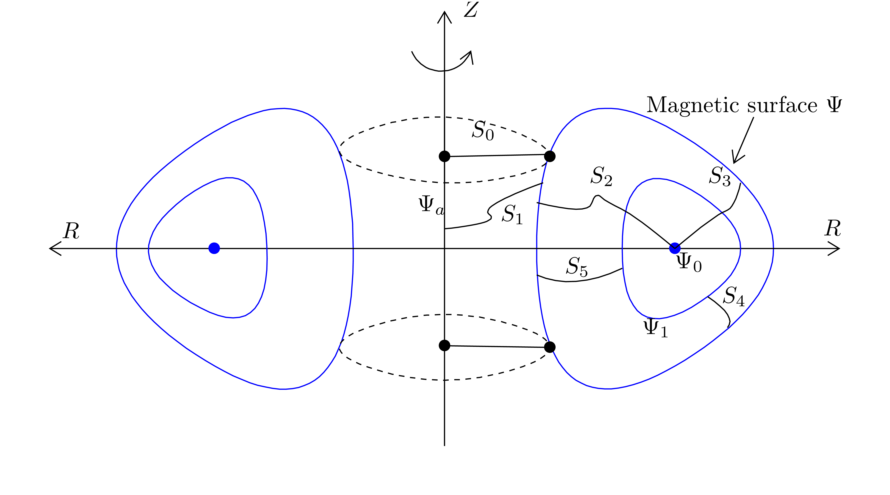 |
Figure 1.2. Closed magnetic surfaces (blue) and various toroidal ribbons used to define the poloidal magnetic flux discussed in Sec. 1.7. The magnetic flux through the toroidal ribbons and is equal to each other. Also the magnetic flux through and is equal to each other; the magnetic flux through and is equal to each other. |
The innermost magnetic surface reduces to a curve, which is called
magnetic axis (in Fig. 1.2, labels
the magnetic axis). is zero at the magnetic axis
since reach maximum/minimum there. As a result,
the poloidal magnetic field is zero there (refer to Eq. (1.8)).
For closed flux surfaces, since ,
the condition means
points in the anticlockwise direction (viewed along
direction), and means
points in the clockwise direction.
Note that is defined by , which is just a component of the vector potential , thereby having no obvious physical meaning. Next, we show that has a simple relation with the poloidal magnetic flux that can be be measured in experiments.
In Fig. 1.3, there are two magnetic surfaces labeled,
respectively, by and . The poloidal magnetic flux through any toroidal
ribbons between the two magnetic surfaces is equal to each other (due to
the magnetic Gauss theorem). Denote this poloidal magnetic flux by  . Next, we calculate this flux. To
make the calculation easy, we select a plane perpendicular to the axis, as is shown by the dash line in Fig. (1.3).
In this case, only contribute to the poloidal
magnetic flux: (the positive direction of the plane is chosen to be
. Next, we calculate this flux. To
make the calculation easy, we select a plane perpendicular to the axis, as is shown by the dash line in Fig. (1.3).
In this case, only contribute to the poloidal
magnetic flux: (the positive direction of the plane is chosen to be
 )
)
Equation (1.21) indicates that the difference of between two magnetic surfaces is equal to the poloidal flux divided by .
In experiments, we measure the poloidal magnetic flux through toroidal loops around the central symmetric axis (discussed in Sec. 1.8). Consider one of the loops that located at point , then, using (1.21), the flux through the loop can be written as
| (1.22) |
The central symmetric axis is a field line. If is finite at , then is zero there. This is the case we encounter in the equilibrium reconstruction problem. Then this flux is written as
| (1.23) |
Due to this relation, is often called the poloidal magnetic flux per radian (SI unit: web/rad), or simply “the poloidal flux”. This relation allows the poloidal flux measurements to be used to constrain the GS equation in the equilibrium reconstrunction (discussed in Sec. 5). Note that the positive normal direction of the surface (where the magnetic flux is defined) is chosen in the direction. This sign choice along with the factor appearing in Eq. (1.23) are often confusing people when they try to relate the experimentally measured flux with the appearing in the GS equation. The factor also appears when we relate the Green function of to the mutual inductance, i.e., (discussed later).
A further compliction is that when one talks about “the poloidal magnetic flux of a magnetic surface”, there are two possibilities of the defintion. One of them is defined relative to the (as is discussed above), and another is relative to the magnetic axis. The first definition is the flux through the central hole of the magnetic surface, i.e., the poloidal flux through in Fig. 1.2. In this case, as is discussed above, the poloidal magnetic flux is related to by
| (1.24) |
where the postive direction is . The is the more often used defintion, and we will stick to this in the equilibrium reconstruction problem.
The second definition is the flux enclosed by the closed flux surface, i.e., the flux through the toroidal ribbon . Denote this flux by , then
| (1.25) |
where is the value of at the magnetic axis, the orientation is in the clockwise direction when an observer looks along the direction of .
By measuring the voltage around a toroidal wire loop, we can obtain the time derivative of the poloidal flux and, after integrating over time, the flux itself.
Suppose that there is a toroidal wire loop located at and denote the magnetic flux through the loop by (only the poloidal magnetic field contribute to this flux, hence this flux is called the poloidal flux). Then Faraday's law
| (1.26) |
where the direction of the loop integration and the direction of is related by the right-hand rule, is written as
| (1.27) |
where is often called electromotive force (emf). If the loop is a coil with turns, the induced voltage in the coil is times the emf, i.e., . Then Eq. (1.27) is written as
| (1.28) |
Integrating the above equation over time, we obtain
| (1.29) |
The starting time can be chosen as when is easy to know (e.g., when there is no plasma). Equation (1.29) tells us how to calcualte from the measured loop voltage . Then is obtained by .
There are usually many flux loops (e.g. 35 on EAST[32]) at different locations in the poloidal plane (see Fig. 1.4). They are outside of the plasma region and thus are “external magnetic measurements”. The measured poloidal flux, along with the poloidal field measurement by magnetic probes, can be used as constraints in reconstructing the magnetic field within the plasma region. This is discussed in Sec. 5.
| 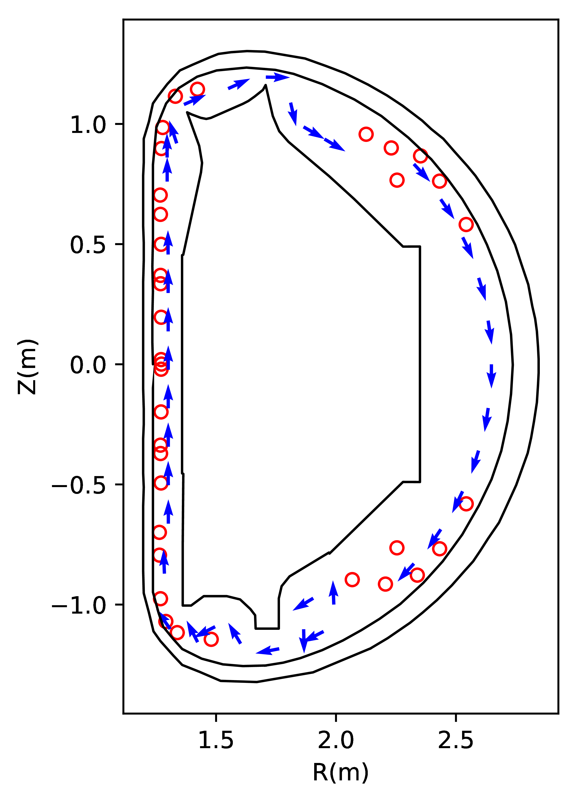 |
A magnetic field line on a closed magnetic surface travel a closed curve in the poloidal plane. For these field lines, we can define the safety factor : the number of toroidal loops a magnetic field line travels when it makes one poloidal loop, i.e.
| (1.30) |
where as the change of the toroidal angle when a magnetic field line travels a full poloidal loop.
For open field line region (where a field line touches the wall before its poloidal projection can close itself), the “connection length” is often used to characterize the magnetic field.
The equation of magnetic field lines is given by
| (1.31) |
where is the line element along the direction of on the poloidal plane. Equation (1.31) can be arranged in the form
| (1.32) |
which can be integrated over to give
| (1.33) |
where the line integration is along the poloidal magnetic field (the contour of on the poloidal plane). Using this, Eq. (1.30) is written
| (1.34) |
The safety factor given by Eq. (1.34) is expressed in terms of the components of the magnetic field. The safety factor can also be expressed in terms of the magnetic flux. Define as the poloidal magnetic flux enclosed by two neighboring magnetic surface, then is given by
| (1.35) |
where is the length of a line segment in the poloidal plane between the two magnetic surfaces, which is perpendicular to the first magnetic surface (so perpendicular to the ). Note that , as well as and , generally depends on the poloidal location whereas is independent of the poloidal location.
Using Eq. (1.35), the poloidal magnetic field is written as
| (1.36) |
Substituting Eq. (1.36) into Eq. (1.34), we obtain
| (1.37) |
We know is a constant independent of the poloidal location, so can be taken outside the integration to give
| (1.38) |
It is ready to realise that the integral appearing in Eq. (1.38) is the toroidal magnetic flux enclosed by the two magnetic surfaces, . Using this, Eq. (1.38) is written as
| (1.39) |
Equation (1.39) indicates that the safety factor of a magnetic surface is equal to the differential of the toroidal magnetic flux with respect to the poloidal magnetic flux enclosed by the magnetic surface.
If the safety factor of a magnetic surface is a rational number, i.e., , where and are integers, then this magnetic surface is called a rational surface, otherwise an irrational surface. A field line on a rational surface with closes itself after it travels poloidal loops. An example of a field line on a rational surface is shown in Fig. 1.5.
In the above, the magnetic field is assumed to be axisymmetric. With this assumption, the poloidal magnetic field (having two components) can be expressed in terms of a single component of the vector potential , (specifically via ). This kind of simplification is not achievable if the axisymmetricity assumption is dropped, because other components of the vector potential (namely and ) will appear in the expression of the poloidal magnetic field. Let us re-examine Eq. (1.2) for a general magnetic perturbation:
When studying tearing modes and electromagnetic turbulence, most authors narrow the possible perturbations by setting , i.e.,
| (2.2) |
| (2.3) |
| (2.4) |
where . Therefore this kind of magnetic perturbation can still be written in the same form as the equilibrium poloidal magnetic field:
| (2.5) |
The above approximation is widely used in practice, e.g., in turbulence simulation, where is replaced by . (Do we miss some magnetic perturbations that is important for plasma transport when using the above specific form?)
The total magnetic field is then written as
| (2.6) |
**check**Can the projection of the total magnetic field line in the poloidal plane can be traced by tracing the contour of ? No. The contours of will not show island structures in the poloidal plane. To show the expected island structures, we need to subtract non-reconnecting poloidal magnetic field from the total poloidal field? **check** The contours of the so-called helical flux will give the expected island structures near the resonant surfaces?**check**
Next, we go back to discuss the 2D case (i.e., assuming axisymmetry).
When the displacement current term is neglectable (the case we consider here), the conductive current is just another representation of the magnetic field. Specifically, the current density is proportional to the curl of the magnetic field (Ampère's law):
where is vacuum magnetic permeability.
Use Eq. (3.1) and the definition , the poloidal components of the current density, and , can be written as
| (3.2) |
and
| (3.3) |
respectively.
Ampere's law (3.1) indicates the toroidal current density is given by
Define by
| (3.5) |
then Eq. (3.4) is written as
| (3.6) |
(Many authors incorrectly refer to Eq. (3.6) as the Grad-Shafranov (GS) equation. Eq. (3.6) is just Ampere's law, which has nothing to do with the force-balance. Only after we express in terms of the plasma pressure, can Eq. (3.6) be called the GS equation, as is discussed Sec. 4.3.)
The operator is different from the Laplacian operator . In terms of the nabla operator , the operator is writen as
| (3.7) |
Let us consider what constraint the force balance imposes on the axisymmetric magnetic field discussed above. The MHD momentum equation is given by
| (4.1) |
where , , , , , and are mass density, charge density, thermal pressure tensor, current density, electric field, and magnetic field, respectively. The electric field force is usually ignored due to either or . Further assume that there is no plasma flow (, the flow effect is discussed in A.13) and the plasma pressure is isotropic, then the steady state momentum equation (force balance equation) is written as
| (4.2) |
where is the scalar plasma pressure.
Is the force balance (4.2) always satisfied in a real toakamak discharge? To answer this question, we need to go back to the original momentum equation (4.1). The imbalance between and will give rise to the compressional Alfven waves, the time-scale of which, , is much shorter than the time-scale we are interested in. Therefore, on the time scale (and for slow flow with , where is the the sound speed), the leading order of the momentum equation is the force balance (4.2).[26]. I.e. the inertial effect can be neglected (plasma mass is approximately zero).
Consider the force balance in the direction of . Dotting the equilibrium equation (4.2) by , we obtain
| (4.3) |
which implies that is constant along a magnetic
field line. Since is also constant along a
magnetic field line, can be expressed in terms
of only on a single magnetic line. Note that
this does not necessarily mean is a
single-valued function of ,
(i.e. ). This is because still has the freedom of taking different values on
different magnetic field lines with the same value of
while still satisfying . This
situation can appear when there are saddle points (X points) in contours (refer to Sec. A.22) and takes different functions of
in islands of sepearated by a X point. For
pressure within a single island of ,
 can be safely assumed.
can be safely assumed.
On the other hand, if , then we obtain
i.e., Eq. (4.3) is satisfied, indicating
is a sufficient condition for the force balance in the parallel (to the
magnetic field) direction.
Consider the force balance in the toroidal direction. The component of Eq. (4.2) is written
| (4.4) |
Since , which implies , equation (4.4)
reduces to
| (4.5) |
Using the expressions of the poloidal current density (3.2) and (3.3) in the force balance equation (4.5) yields
| (4.6) |
which can be further written
| (4.7) |
According to the same reasoning for the pressure, we conclude that is a sufficient condition for the toroidal force balance. (The function defined here is usually called the “poloidal current function” in tokamak literature. The reason for this name is discussed in Sec. A.11.)
Consider the force balance in direction. The component of Eq. (4.2) is written
| (4.8) |
Using the expressions of the current density and magnetic field [Eqs. (1.6) and (3.3)], equation (4.8) is written
| (4.9) |
Assuming the sufficient condition discussed above, i.e., and are a function of only , i.e., and , Eq. (4.9) is written
| (4.10) |
which can be simplified to
| (4.11) |
which is the requirement of force-balance along the major radius. On the other hand, we know can be expressed in via Eq. (3.6). Combining this with Eq. (4.11) yields
| (4.12) |
i.e.,
 |
(4.13) |
Equation (4.13) is known as Grad-Shafranov (GS) equation.
[Note that the component of the force balance equation is written
which turns out to be identical with the Grad-Shafranov equation. This is not a coincidence. The reason is that the force balance equation has been satisfied in three different directions (namely, , , and direction) and thus it must be satisfied in all the directions.]
A general axisymmetric magnetic field (which does not necessarily satisfy the force balance), is given by Eq. (1.10), i.e.,
| (4.14) |
For the above axisymmetric magnetic field to be consistent with the force balance equation (4.2), there are additional requirements for and . Specifically, is restricted by the GS equation and should be a function of only . Therefore an axisymmetric equilibrium magnetic field is fully determined by two functions, and . The is determined by solving the GS equation with specified RHS source terms and boundary conditions.
The RHS source terms in the GS equation (4.13) are and  , both
of which must be specified before the GS equation can be solved. For
most cases, the source terms are nonlinear about
and thus the GS equation is a two-dimensional (in
and ) nonlinear partial
differential equation for .
, both
of which must be specified before the GS equation can be solved. For
most cases, the source terms are nonlinear about
and thus the GS equation is a two-dimensional (in
and ) nonlinear partial
differential equation for .
For most choices of and , the GS equation (4.13) has to be
solved numerically. For some particular choices of
and profiles, analytical solutions are
available, one of which is the Solovév equilibrium and is
discussed in Appendix A.12.
Note that we solve the GS equation in order to obtain the poloidal magnetic flux and thus the poloidal magnetic field. The toroidal magnetic field must be specified in some way before we can solve the GS equation. There are several ways of specifying the toroidal magnetic field: (1) given , (2) given , (3) given the safety factor . There are simple relations between , , and , which allows translation form one to another (discussed later). In transport simulations, is obtained from current drive models and neoclassical bootstrap current models. Note that the specification of the source terms (, , , and ) usually involve the unknown (via not only the explicit presence of , but also the flux-surface averaging which implicitly involves ). This indicates that iterations are needed when numerically solving the GS equation.
A routine in tokamak operation is to reconstruct magnetic field under the constraints of MHD force balance and expermental measurements. This kind of task can be done by various codes, e.g., EFIT. I developed a similar code, heq (github.com/youjunhu/heq). I will discuss details on this code.
Ampere's law in Eq. (3.6) can be generalized to include discrete toroidal currents:
where is the plasma toroidal current density, is a toroidal curent filament located at , is Dirac's delta function. The solution to the above equation is given by
| (5.2) |
where is the fundamental solution given by
which is often called Green's function in this context (which is obtained by using a formula similar to the Biot-Savart Law, see B.14).
If all the toroidal currents (plasma current + coil/vessel curents) are known, then can be calculated by using Eq. (5.2). Unfortunately, is usually unknown. Meanwhile the force-balance indicates that can be expressed in terms of via Eq. (4.11), i.e.,
| (5.4) |
Substituting this into Eq. (5.2) gives an implicit formula for , which can be iterated (with an initial guess of , and assuming the function forms, and , as well as the coil currents , are known ). We can see that this is a Picard iteration. Will the iteration converge? We do not know for sure. Numerical experiments indicate it does in some cases. Let us discuss some specific cases. We assume that the 1D functions, and , can be modeled as (EFIT's model[17]):
| (5.5) |
| (5.6) |
where
| (5.7) |
and are values of at the magnetic axis and LCFS, the coefficients and are to be determined, and are integers chosen by users. Expressions (5.5) and (5.6) guarantee that and are zero at and outside the LCFS, and thus no plasma current there. Note that expressions (5.5) and (5.6) are nonlinear functions of even for . This is because the unknowns, and , appear in the denominator of expression (5.7). Another nonlinearity is related to the fact that the unkonw determines where the LCFS is and thus determines the region where the current desnsity is set to zero. This also gives rise to the name “free-boundary” for this kind of problems.
Choosing an initial guess of on gridpoints, we can get the values of , , and by solving a least square problem that minimises the difference between quantities computed and the corresponding quantities measured in actual experiments. (Details are given in Sec. 5.1.)
After the coefficients and are obtained, can be updated by using Eqs. (5.4)-(5.6). Then, we use the latest and in Eq. (5.2) to re-compute the values of on gridpoints by using Eq. (5.2). The procedure is repeted until convergecne in . This is called Picard iteration. (Alternatively, the values of on the inner gridpoints can be updated by inverting the Laplace operator , see Sec. 5.4. The values of on the bounary still have to be obtained by using Eq. (5.2).)
I implemented the above method in a Python code (HEQ https://github.com/youjunhu/heq). The following subsections discuss details of the code: Sec. 5.1 discusses the least square problem. Sec. 5.3 discusses the vertical displacement instability stabilizer. Without the stabilizer, the Picard iteration diverges for many elongated configurations, due to the vertical displacement instability.
For , plugging expressions (5.5) and (5.6) into (5.4), we obtain
For notation ease, define the following basis functions:
| (5.9) |
and the corresponding expansion coefficients
| (5.10) |
then Eq. (5.8) is written as
| (5.11) |
where . Plugging expression (5.11) into Eq. (5.2), we obtain
Collect all the free parameters as a column vector: . Denote the size of vector by , which is the number of free parameters, i.e., , then the rhs of Eq. (5.12) can be written as matrix-vector product, . Denote the total number of measurements of the poloidal flux by . Then matrix elements of for are given by:
| (5.13) |
for , and
| (5.14) |
for . Here is the location where the flux measurement is made.
The matrix , which is of shape , is called “response matrix”. (In least square problems, this matrix is called “design matrix'.) The value of is equal to number of measurements/constraints included (measurements/constraints are merged to by row stacking). We will include measurements of the poloidal flux, measurements of the poloidal magnetic field, 1 measurement of plasma current, a constraint for the on-axis safety factor. Then . (For EAST, .)
Next, we consider the poloidal field measurement:
| (5.15) |
where is the location of the No. i probe, is a unit vector denoting the positive normal direction of the No. magnetic probe, , .
can be inferred from via
where
| (5.17) |
and and is given by Eq. (B.18) and (B.19). The rhs of Eq. (5.16) indicates that the matrix elements of are given by:
| (5.18) |
for (), and
| (5.19) |
for (). I place the magnetic field equations after the flux equations, i.,e the row number is in the range .
Next, we consider the constraint of plasma current. The plasma current can be inferred from via
| (5.20) |
The rhs of Eq. (5.20) indicates that the matrix elements of are given by:
| (5.21) |
for (), and zero for (). This equation is placed after the equations of flux and magnetic field measurement, i.e., its row number is .
Let us consider the constraint of the on-axis safety factor . A formula for computing is given by:
| (5.22) |
where
| (5.23) |
is the ellipticity (elongation) at the magnetic axis. Organizing Eq. (5.22) as
| (5.24) |
and using
| (5.25) |
equation (5.24) is written as
| (5.26) |
This provides one linear equation for , with the matrix elements given by
| (5.27) |
for (), and zero for ().
In HEQ, the ellipticity is calculated by computing the elongation of the innermost magnetic surface found by the contour program.
Step 0. Initial guess of : with .
Step 1. Search for the magnetic axis and LCFS of so that we get the values of at those locations. These values are needed in computing . The location of the LCFS are also needed because we need to set the plasma current to zero outside the LCFS.
Step 2. Compute elements of response matrix using .
Step 3. Solve linear least-square problem to get .
Step 4. Update using the latest plasma and coil currents:
or in its discrete form:
Step 5: and goto Step 1.
To stabilize the vertical displacement instability in the Picard
iteration, we add two virtual coils that carry oppositive currents
(denoted by and ),
and are up-down symmetric, located at and  , respectively. And set the current
by
, respectively. And set the current
by
where is the location of plasma current center defined by

is the generated by all
the real PF coils, is a positive constant chosen
by users. Note that corresponds to that the generated by the virtual coils exactly cancles the
generted by all the real coils. Usually we need
value larger than 2, i.e., over compensation. The virtual coils
locatons, and ,
are usually chosen near the center of the top/bottom boundary of the
computational box.
If we want to invert the finite-difference version of the Laplace
operator  to solve the GS equation for , we encounter two issues: (1) the
RHS of the GS equation involves 2 unknown functions
and , in addition to the main
unknown function ; (2) the
boundary condition needs to be given: i.e., the values of on a rectangular computational boundry need to be
provided.
to solve the GS equation for , we encounter two issues: (1) the
RHS of the GS equation involves 2 unknown functions
and , in addition to the main
unknown function ; (2) the
boundary condition needs to be given: i.e., the values of on a rectangular computational boundry need to be
provided.
To address issue (1): function forms of and are chosen by users, often as polymials in with coefficients that are assumed known (which are later obtained in the least-square method to make the resulting solution approximately match some measurements, as is discussed in the previous section).
To address issue (2): The value of on the rectangular boundary is updated using the Green's function method (assume that external coil currents are given), as is discussed in the previous section.
Guess values of on both the inner gridpoints and
boundary points. After this, we can invert to
update within the computational box, and use the
Green's function method to update values of on
the boundary. Then iterate to converge.
Two iterations: one for values on the inner gridpoints, one over values on the computational boundary.
External PF coil currents enter the problem via the boundary condition: specifically via its contribution to on the boundary.
The above procedure is just a minor modification from the pure Green's function algorithm discussed in Sec. 5.2, i.e., replacing the Green's function method for the inner gridpoints with the finte-difference Laplace operator inverting.
For reference easy, the finite-difference schemes for the Laplace operator is listed below.
| (5.28) |
Method 1: discretize Eq. (5.29) as
which can be further discretized as
which can be organized as
where , , , . Method 2: discetize Eq. (5.30)
which can be organized as
where , ,
My numerical experiments indicate this scheme is more stable than than the first one (for the same grid size, and without the VDE stabilizer, the first scheme blow up while the latter scheme works well).
Semi-free boundary equilibrium problems refer to the problems where the LCFS shape and the value of on it are given, and one is asked to solve the currents in the PF coils. This is similar to the fitting problem discussed above: we consider the control points on the LCFS as virtual flux loops that measure the poloidal flux. This mode can be used to set the feedforward PF coil currents when a target plasma state time evolution is given.
Using magnetic measurements as input, a realtime equilibrium reconstruction code (e.g., rtefit) can infer the inner structure of (observer). On the other hand, PF coil currents can provide actions on (actuactor). With the observer and actuator, we can feedback controll the magnetic configuration (flux map).
For example, consider controlling the shape of LCFS (often called iso-flux control). We choose a target surface. To make sure that the target surface is a magnetic surface, the value of on it should be made a spatial constant. Dentoe this constant by . To make sure that there is no closed flux surface outside the target surface, we select the target surface as a surface that is tangential to the first wall (for limiter configuration) or there is a X-point on it (for divertor configuration). Then discretize the target surface by a series of discrete coordinates with . The actions (coil current changes) are chosen to minimise the following residual:
| (6.1) |
where
| (6.2) |
| (6.3) |
the superscritp (old) indicates values before the control actions, is obtained by a real-time equilibrium reconstruction code. This assumes that the plasma current density remains the same when the actions are imposed (i.e., no plasma response is included), so that only the coil current changes contribute to the change.
If we need to feedback control points to desired positions, then the above sum can be extended to include the following:
where are desired poistions of X points.
Faraday's law
| (7.1) |
can be written in the integral form:
| (7.2) |
(The direction of the loop integration is related to the surface orientation by the right-hand rule.) I.e.,
 |
(7.3) |
where is the flux linked with the loop.
For the No. coil, the time derivative of the flux through it can be expressed as
| (7.4) |
where is the mutual indctance between the No. coil and No. coil, is the mutual inductance between the No. coil and a plasma filament located at , and is the current carried by the filament. The integration is over a fixed region (time independent) that is large enough to include all the plasma and small enough to not include any coil.
Define the effective mutual inductance between the plasma and the No. coil by
| (7.5) |
where is the plasma current, then expression (7.4) is written as
where the term proportional to the time derivative of is ignored (is this a good approximation?). Including the above emf in the circuit equation, we get
| (7.7) |
where is the resistence of the coil, is the current in the present coil, is the voltage imposed on the coil by the power supply. (Here the positive direction of and must be chosen consistent with the loop integration discussed above i.e., anti-clockwise in top view.)
The VDE controlling coils are made of two coils (one upper and one
lower, with updown symmetry), which are anti-conneted in series and
powered by one voltage source. For the upper  coil, the circuit equation is
coil, the circuit equation is
| (7.8) |
Similarly, for the lower () coil, the circuit equation is
| (7.9) |
The anti-series connection implies that
| (7.10) |
and
| (7.11) |
where is the source voltage (assuming the voltage source positive terminal is connected to the upper coil that goes anti-clockwise in top view). Combining these equations, we obtain
| (7.12) |
This is used as an equation for the upper VDE coil current. Eq. (7.10) is used as an equation for the lower VDE coil current.
Because the mutual inductance between two objects is symmetric (i.e., ), the mutual inductance given by expression (7.5) can also be used to calculate the effective emf induced in the plasma by the coils:

(Here can be understood as weighted average of . Why to use weighted, rather than just equal-weighted spatial average? This is to ensure energy conservation: the power is , so the current density should serve as a weight.)
Similarly, the effective emf self-induced in the plasma is given by
| (7.13) |
where is the mutual inductance between filament and filament; both the 2D integrations are over a fixed region that includes the plasma but does not include any coil; one of the two 2D integrations can be regarded as weighted average and the other is the integration over the source. Expresion (7.13) motivates us to define the effective self-inductance of plasma by
| (7.14) |
Then the effective emf in expression (7.13) is written as
where the term proportional to the time derivative of is ignored. Then the circuit equation for the plasma current is written as
| (7.15) |
where is the effective plasma resistivity.
Using the Euler implicit scheme, the coil current evolution equation () is written as
Moving all the unknown (coil currents and plasma current ) to the left-hand side, we get
For each coil, we get a linear equation like the above. For coils, we get equations. (Note that depends on , and thus is time dependent. If we use value of at in the above equation, then we need to iterate because is unkown. If we use the value at , then no iteration is needed, whch is the case used in HEQ).
Similarly, the plasma current evolution equation (7.15) is discretized as
| (7.17) |
i.e.,
| (7.18) |
Define the plasma state by the position of the magnetic axis , total plasma current , and the shape of the LCFS. Discretize the
LCFS in the cylindrical coordinates by points.
Then the plasma state can be represented by real
numbers:  , , ,
and for .
, , ,
and for .
Inputs to the policy network: the magnetic measurements at the present time step (which serves as a proxy to the actual plasma state), and target plasma states (provided by the designer) at (where may be a small integer, say ).
Output of the policy network: voltage command to the coils imposed at which can hopefully make the plasma follow the target state in future time steps.
How to train the policy network on a plasma simulator?
In many studies of tokamak plasmas, one need construct a curvilinear coordinate system based on a given magnetic cofiguration in order to make the problem amenable to analytical methods or numerical methods. Specifically, many theories and numerical codes use the curvilinear coordinate systems that are constructed with one coordinate surface coinciding with magnetic surfaces. In these coordinate systems, we need to choose a poloidal coordinate and a toroidal coordinate . A particular choice for and is one that makes the magnetic field lines be straight lines in plane. These kinds of coordinates are often called magnetic coordinates. That is, “magnetic coordinates are defined so they conform to the shape of the magnetic surfaces and trivialize the equations for the field lines.”
A further tuned magnetic coordinate system is the so-called field aligned (or filed-line following) coordinate system, in which changing one of the three coordinates with the other two fixed would correspond to following a magnetic field line. The field aligned coordinates are discussed in Sec. 15.
Next, let us discuss some general properties about coordinates transformation[4].
In the Cartesian coordinates, a point is described by its coordinates , which, in the vector form, is written as
| (8.1) |
where is the location vector of the point; , , and are the basis vectors of the Cartesian coordinates, which are constant, independent of spactial location. The transformation between the Cartesian coordinates system, , and a general coordinates system, , can be expressed as
| (8.2) |
For example, cylindrical coordinates can be considered as a general coordinate systems, which are defined by .
The transformation function in Eq. (8.2) can be written as
| (8.3) |
A useful quality characterizing coordinate transformation is the Jacobian determinant (or simply called Jacobian), which, for the transformation in Eq. (8.3), is defined by
| (8.4) |
which can also be written as
| (8.5) |
It is easy to prove that the Jacobian  in Eq. (8.5) can also be written (the derivation is given in my notes
on Jacobian)
in Eq. (8.5) can also be written (the derivation is given in my notes
on Jacobian)
| (8.6) |
Conventionally, the Jacobian of the transformation from the Cartesian coordinates to a particular coordinate system is called the Jacobian of , without explitly mentioning that this transformation is with respect to the Cartesian coordinates.
Using the defintion in Eq. (8.4), the Jacobian of the Cartesian coordinates can be calculated, yielding
. Likewise, the Jacobian of
the cylindrical coordinates can be calculated as
follows:
If the Jacobian of a coordinate system is greater than zero, it is called a right-handed coordinate system. Otherwise it is called a left-handed system.
In a curvilinear coordinate system , there are two kinds of basis vectors: and , with These two kinds of basis vectors satisfy the following orthogonality relation:
| (8.7) |
where is the Kronical delta function. [Proof:
Working in a Cartesian coordinate system  with
the corresponding basis vectors denoted by ,
then the left-hand side of Eq. (8.7) can be written as
with
the corresponding basis vectors denoted by ,
then the left-hand side of Eq. (8.7) can be written as
where the second equality is due to since are constant vectors independent of spatial location; the chain rule has been used in obtaining Eq. (8.8)]
[The cylindrical coordinate system is an example of general coordinates. As an exercise, we can verify that the cylindrical coordinates have the property given in Eq. (8.7). In this case, , , , where , , .]
It can be proved that is a contravariant vector while is a covariant vector (I do not prove this and do not bother with the meaning of these names, just using this as a naming scheme for easy reference).
The orthogonality relation in Eq. (8.7) is fundamental to the theory of general coordinates. The orthogonality relation allows one to write the covariant basis vectors in terms of contravariant basis vectors and vice versa. For example, the orthogonality relation tells that is orthogonal to and , thus, can be written as
| (8.9) |
where is a unknown variable to be determined. To determine , dotting Eq. (8.9) by , and using the orthogonality relation again, we obtain
| (8.10) |
which gives
Thus is written, in terms of , , and , as
| (8.12) |
Similarly, we obtain
| (8.13) |
and
| (8.14) |
Equations (8.12)-(8.14) can be generally written
| (8.15) |
where represents the cyclic order in the variables . Equation (8.15) expresses the covariant basis vectors in terms of the contravariant basis vectors. On the other hand, from Eq. (8.12)-(8.14), we obtain
| (8.16) |
which expresses the contravariant basis vectors in terms of the covariant basis vectors.
Suppose is an arbitrary general coordinate system. Following Einstein's notation, contravariant basis vectors are denoted with upper indices as
and the covariant basis vectors are denoted with low indices as
Then the orthogonality relation, Eq. (8.7), is written as
| (8.19) |
In term of the contravairant basis vectors, is written
| (8.20) |
where the components are easily obtained by taking scalar product with , yielding , , and . Similarly, in term of the covariant basis vectors, is written
| (8.21) |
where , , and .
Using the above notation, the relation in Eq. (8.15) is written as
| (8.22) |
| (8.23) |
| (8.24) |
where . Similarly, the relation in Eq. (8.16) is written as
| (8.25) |
| (8.26) |
| (8.27) |
The gradient of a scalar function is readily calculated from the chain rule,
| (8.28) |
Note that the gradient of a scalar function is in the covariant representation. The inverse form of this expression is obtained by dotting the above equation respectively by the three contravariant basis vectors, yielding
| (8.29) |
| (8.30) |
| (8.31) |
Using Eq. (8.28), the directional derivative in the direction of is written as
| (8.32) |
To calculate the divergence of a vector, it is desired that the vector should be in the contravariant form because we can make use of the fact:
| (8.33) |
for any scalar quantities  and . Therefore we write vector
as
and . Therefore we write vector
as
| (8.34) |
where , , . Then the divergence of is readily calculated as
where the second equality is obtained by using Eqs. (8.29), (8.30), and (8.31).
The Laplacian operator is defined by . Then is written as ( is an arbitrary function)
To proceed, we can use the divergence formula (8.36) to express the divergence in the above expression. However, the vector in the above (blue term) is not in the covariant form desired by the divergence formula (8.36). If we want to directly use the formula (8.36), we need to transform the vector (blue term in expression (8.37)) to the covariant form. This process seems to be a little complicated. Therefore, I choose not to use this method. Instead, I try to simplify expression (8.37) by using basic vector identities:
Using the gradient formula, the above expression is further written as
and can be simplified as
Assume are field-line following coordinates with along the field line direction, then neglect all the parallel derivatives, i.e., derivative over , then the above expression is reduced to
This approximation reduces the Laplacian operator from being three-dimensional to being two-dimensional. This approximation is often called the high- approximation, where is the toroidal mode number (mode number along direction).
To take the curl of a vector, it should be in the covariant representation since we can make use of the fact that . Thus the curl of is written as
Note that taking the curl of a vector in the covariant form leaves the vector in the contravariant form.
Consider a general coordinate system . I define the metric tensor as the transformation matrix between the covariant basis vectors and the contravariant ones. Equations (8.15) and (8.16) express the relation between the two sets of basis vectors using cross product. Next, let us express the relation in matrix from. To obtain the metric matrix, we write the contrariant basis vectors in terms of the covariant ones, such as
| (8.43) |
Taking the scalar product respectively with , , and , Eq. (8.43) is written as
| (8.44) |
| (8.45) |
| (8.46) |
Similarly, we write
| (8.47) |
Taking the scalar product with , , and , respectively, the above becomes
| (8.48) |
| (8.49) |
| (8.50) |
The same situation applies for the basis vector,
| (8.51) |
Taking the scalar product with , , and , respectively, the above equation becomes
| (8.52) |
| (8.53) |
 |
(8.54) |
Summarizing the above results in matrix form, we obtain
| (8.55) |
Similarly, to convert contravariant basis vector to covariant one, we write
| (8.56) |
Taking the scalar product respectively with , , and , the above equation becomes
| (8.57) |
| (8.58) |
| (8.59) |
For the second contravariant basis vector
| (8.60) |
| (8.61) |
| (8.62) |
| (8.63) |
For the third contravariant basis vector
| (8.64) |
| (8.65) |
| (8.66) |
| (8.67) |
Summarizing these results, we obtain
| (8.68) |
where
This matrix and the matrix in Eqs. (8.55) should be the inverse of each other. It is ready to prove this by directly calculating the product of the two matrix.
Suppose that are arbitrary general coordinates except that is the usual toroidal angle in cylindrical coordinates. Then is perpendicular to both and . Using this, Eq. (8.55) is simplified to
| (8.69) |
Similarly, Eq. (8.68) is simplified to
| (8.70) |
[Note that the matrix in Eqs. (8.69) and (8.70) should be the inverse of each other. The product of the two matrix,
| (8.71) |
can be calculated to give
where
By using the definition of the Jacobian in Eq. (8.6), it is easy to verify that , i.e.,
| (8.72) |
]
The axisymmetric equilibrium magnetic field is given by Eq. (4.14), i.e.,
| (8.73) |
In a general coordinate system (not necessarily flux coordinates), the above expression can be written as
| (8.74) |
where the subscripts denote the partial derivatives with the corresponding subscripts. Note that Eq. (8.74) is a mixed representation, which involves both covariant and contravariant basis vectors. Equation (8.74) can be converted to the contravariant form by using the metric tensor, giving
| (8.75) |
Similarly, Eq. (8.74) can also be transformed to the covariant form, giving
| (8.76) |
For the convenience of notation, define
| (8.77) |
then Eq. (8.76) is written as
| (8.78) |
A coordinate system , where is the usual cylindrical toroidal angle, is called a magnetic/flux coordinate system if is a function of only , i.e., (we also have since we are considering axially symmetrical case). In terms of coordinates, the contravariant form of the magnetic field, Eq. (8.75), is written as
| (8.79) |
where . The covariant form of the magnetic field, Eq. (8.76), is written as
| (8.80) |
The local safety factor is defined by
| (8.81) |
which characterizes the local pitch angle of a magnetic field line in
 plane of a magnetic surface. Substituting the
contravariant representation of the magnetic field, Eq. (8.79),
into the above equation, the local safety factor is written
plane of a magnetic surface. Substituting the
contravariant representation of the magnetic field, Eq. (8.79),
into the above equation, the local safety factor is written
| (8.82) |
Note that the expression in Eq. (8.82)
depends on the Jacobian .
This is because the definition of depends on the
definition of , which in turn
depends on the the Jacobian .
In terms of , the contravariant form of the magnetic field, Eq. (8.79), is written
| (8.83) |
and the parallel differential operator is written as
| (8.84) |
If happens to be independent of (i.e., field lines are straight in plane), then the above operator becomes a constant coefficient differential oprator (after divided by ). This simplification is useful because different poloidal harmonics are decoupled in this case. We will discuss this issue futher in Sec. 14.
The global safety factor defined in Eq. (1.34) is actually the poloidal average of the local safety factor, i.e.,
Note that and defined this way can be negative, which depends on the choice of the positive direction of and coordinates (note that the safety factor given in G-eqdsk file is always positive, i.e. it is the absolute value of the safety factor defined here).
Next, let us transform the integration in
expression (8.86) to a curve integral in the poloidal
plane. Using the relation  and
[Eq. (8.94)], expression (8.86) is further
written
and
[Eq. (8.94)], expression (8.86) is further
written
Expression (8.87) is used in the GTAW code to numerically calculate the value of on magnetic surfaces (as a benchmarking of the profile specified in the G-eqdsk file). Expression (8.87) can also be considered as a relation between and . In the equilibrium problem where is given (fixed-q equilibrium), we can use expression (8.87) to obtain the corresponding (which explicitly appears in the GS equation):
| (8.88) |
We note that expression (8.88) involves magnetic surface averaging, which is unknown before we know . Therefore iteration is usually needed in solving the fixed-q equilibrium (i.e., we guess the unknown , so that the magnetic surface averaging in expression (8.88) can be performed, yielding the values of .)
Using and , the absolute value of in expression (8.87) is written
which is the familiar formula we see in textbooks.
Given the definition of a magnetic surface coordinate system , the Jacobian of this system is fully determined. On the other hand, given the definition of , , and the Jacobian, the definition of is fully determined (can have some trivial shifting freedoms). Next, let us discuss how to calculate in this case. In coordinates, a line element is written
| (8.91) |
The line element that lies on a magnetic surface (i.e., ) and in a poloidal plane (i.e., ) is then written
We use the convention that and take the same sign, i.e.,
| (8.93) |
Using the fact that and are orthogonal and , the above equation is written as
 |
(8.94) |
Given , Eq. (8.94) can be integrated to determine the coordinate of points on a magnetic surface.
–—
| (8.95) |
Once is known, the value of of a point can be obtained by integrating expression (8.94), i.e.,
| (8.96) |
where the curve integration is along the contour , is a reference point on
the contour, where value of the poloidal angle is chosen as . The choice of the positive direction of is up to users. Depending on the positive direction
chosen, the sign of the Jacobian of the constructed coordinates can have
a sign difference from the appearing in Eq. (8.96). Denote the Jacobian of the constructed coordinates by
, then
| (8.97) |
This sign can be determined after the radial coordinate and the positive
direction of the poloidal angle are chosen. In GTAW code, I
choose the positive direction of to be in
anticlockwise direction when observers look along the direction of . To achieve this, the line
integration in Eq. (8.96) should be along the anticlockwise
direction. (I use the determination of the direction matrix, a well
known method in graphic theory, to determine the direction from a given
set of discrete points on a magnetic surface.)
The span of defined by Eq. (8.96)
is usually not in one poloidal loop. This
poloidal angle can be scaled by  to define a new
poloidal coordinate , whose
span is in one poloidal loop, where is a magnetic surface function given by
to define a new
poloidal coordinate , whose
span is in one poloidal loop, where is a magnetic surface function given by
| (8.98) |
Then is written as
where . Sine we have modified
the definition of the poloidal angle, the Jacobian of the new
coordinates is different from that of . The Jacobian  of the new coordinates is written as
of the new coordinates is written as
The Jacobian can be set to various forms to
achieve various poloidal coordinates, which will be discussed in the
next section. After the Jacobian and the radial coordinate is chosen, all the quantities on the right-hand side of
Eq. (8.99) are known and the integration can be performed
to obtain the value of of each point on each
flux surface.
[The reference points and the values of poloidal
angle at these points can be chosen by users. One choice of the
reference points are those points on the
horizontal ray in the midplane that starts from the magnetic axis and
points to the low filed side of the device and
at these points is chosen as zero (this is my choice in the
GTAW code). In the TEK code, the reference
points are chosen at the high-field side of the midplane and at the reference points.]
If the Jacobian is chosen to be of the following
form
| (8.101) |
Then in Eq. (8.99) is written
| (8.102) |
and the Jacobian of new coordinates  ,
, which is given by Eq. (8.100), now takes the form
,
, which is given by Eq. (8.100), now takes the form
| (8.103) |
Equation (8.102) indicates a set of poloidal points with equal arc intervals corresponds to a set of uniform points. Therefore this choice of the Jacobian is called the equal-arc-length Jacobian. Note that Eq. (8.102) does not involve the radial coordinate . Therefore the values of of points on any magnetic surface can be determined before the radial coordinate is chosen.
The volume element in coordinates is given by . If we choose a Jacobian that is independent of , then uniform grids will correspond to grids with uniform volume interval. In this case, is written as
| (8.104) |
where  is a function independent of . Then in Eq. (8.99)
is written
is a function independent of . Then in Eq. (8.99)
is written
| (8.105) |
and the Jacobian of the new coordinates ,
, is given by Eq. (8.100),
which now takes the following form:
| (8.106) |
Note that both and  are
independent of the function introduced in Eq.
(8.104). ( is eliminated by the
normalization procedure specified in Sec. 8.15.1 due to the
fact that is constant on a magnetic surface.)
The equal-volume poloidal angle is also called Hamada poloidal angle.
are
independent of the function introduced in Eq.
(8.104). ( is eliminated by the
normalization procedure specified in Sec. 8.15.1 due to the
fact that is constant on a magnetic surface.)
The equal-volume poloidal angle is also called Hamada poloidal angle.
The equal-volume poloidal angle is useful in achieving loading balance
for parallel particle simulations. Assume that markers are loaded
uniform in space and the poloidal angle is domain decomposed and
assigned to different MPI process. Then the equal-volume poloidal angle
can make marker number in each MPI process be equal to each other and
thus work loading to each process be equal. (**check**If the domain
decomposition is also applied to the radial direction, to achieve
loading balance, then the radial coordinate
should be chosen in a way that makes be
independent of , so that in Eq. (8.106) is constant in space.**)
If the Jacobian is chosen to be of the Boozer
form:
| (8.107) |
then the poloidal angle in Eq. (8.99) is written as
| (8.108) |
The final Jacobian is given by
| (8.109) |
The usefullness of Boozer poloidal angle will be further discussed in Sec. 14.8 after we introduce a gneralized toroidal angle.
If the Jacobian is chosen to be of the following
form
then Eq. (8.82) implies that the local safety factor, , is a magnetic surface function, i.e., the magnetic field lines are straight in plane. Then the poloidal angle in Eq. (8.99) is written
| (8.110) |
The Jacobian given by Eq. (8.100)
now takes the form
| (8.111) |
Let us denote an arbitrary poloidal angle by and
the above straight-field-line poloidal angle by  , then it is ready to find the following relation
between and :
, then it is ready to find the following relation
between and :
| (8.112) |
where is the local safety factor corresponding
to the arbitrary poloidal angle ,
i.e., . [Proof: Using , the poloidal angle given in Eq. (8.110) is written as
Using , where is the Jacobian of coordinates,
then the above is reduced to expression (8.112).]
Note that Boozer poloidal angle is very close to the poloidal angel disccused here because the two Jacobians are very similar:
| (8.114) |
All Jacobians introduced above can be written in a general form:
 |
(8.115) |
The choice of gives the PEST coordinate, give the Boozer coordinate, gives the equal-arc coordinate, gives the Hammada coordinate.
Figure 8.1 compares the equal-arc-poloidal angle and the straight-line poloidal angle, which shows that the resolution of the straight-line poloidal angle is not good near the low-field-side midplane. Since ballooning modes take larger amplitude near the low-field-side midplane, better resolution is desired there. This is one reason that I often avoid using the straight-line poloidal angle in my numerical codes.
After the magnetic coordinates are constructed, we can evaluate the
Jacobian by using directly the definition of the
Jacobian, i.e.,
| (8.116) |
which can be further written as
| (8.117) |
where the partial differential can be evaluated by using numerical
differential schemes. The results obtained by this way should agree with
results obtained from the analytical form of the Jacobian. This
consistency check provide a verification for the correctness of the
theory derivation and numerical implementation. In evaluating the
Jacobian by using the analytical form, we may need to evaluate , which finally reduces to
evaluating . The value of
 is obtained numerically based on the numerical
data of given in cylindrical coordinate grids.
Then the cubic spline interpolating formula is used to obtain the value
of at desired points. (
calculated by the second method (i.e. using analytic form) is used in
the GTAW code; the first methods are also implemented in the code for
the benchmark purpose.) In the following sections, for notation ease,
the Jacobiban of the constructed coordinate system will be denoted by
, rather than .
is obtained numerically based on the numerical
data of given in cylindrical coordinate grids.
Then the cubic spline interpolating formula is used to obtain the value
of at desired points. (
calculated by the second method (i.e. using analytic form) is used in
the GTAW code; the first methods are also implemented in the code for
the benchmark purpose.) In the following sections, for notation ease,
the Jacobiban of the constructed coordinate system will be denoted by
, rather than .
The radial coordinate can be chosen to be various surface function, e.g., volume, poloidal or toroidal magnetic flux within a magnetic surface. The frequently used radial coordinates include , and , where is defined by
| (8.118) |
where and are the values of at the magnetic axis and LCFS, respectively. Other choices of the radial coordinates: the normalized toroidal magnetic flux and its square root, , and .
The volume between magnetic surfaces can also be used as a radial coordinate. The differential volume element is written as
| (8.119) |
Integrating over the toroidal angle, we obtain
| (8.120) |
Further integrating over the poloidal angle, we obtain
| (8.121) |
i.e.,
| (8.122) |
The cylindrical coordinates is a right-hand
system, with the positive direction of pointing
vertically up. In GTAW code, the positive direction of
is chosen in the anticlockwise direction when observers look along the
direction of . Then the
definition indicates that (1)
is negative if points from the magnetic axis to
LCFS; (2) is positive if
points from the LCFS to the magnetic axis. This can be used to determine
the sign of Jacobian after using the analytical formula to obtain the
absolute value of Jacobian.
data
Given an axisymmetric tokamak equilibrium in
coordinates (e.g., 2D data on a rectangular
grids in G-file), we can construct a magnetic
surface coordinates by the following two steps.
(1) Find out a series of magnetic surfaces on
plane and select radial coordinates for each magnetic surface (e.g. the
poloidal flux within each magnetic surface). (2) Specify the Jacobian or
some property that we want the poloidal angle to have. Then calculate
the poloidal angle of each point on each flux surface (on the plane) by using Eq. (8.94) (if the Jacobian
is specified) or some method specified by us to achieve some property we
prefer for the poloidal angle (if a Jacobian is not directly specified).
Then we obtain the magnetic surface coordinates system .
Two-dimensional data on a rectangular grids is read from the G_EQDSK file (G-file) of EFIT code.
Based on the 2D array data, I use 2D cubic spline interpolation to
construct a interpolating function .
To construct a magnetic surface coordinate system, I need to find the
contours of , i.e., magnetic
surfaces. The values of on the magnetic axis,
, and the value of on the last closed flux surface (LCFS), , are given in G-file. Using these two values,
I construct a 1D array “psival” with value of elements
changing uniform from to . Then I try to find the contours of with contour level value ranging from
to . This is done in the
following way: construct a series of straight line (in the poloidal
plane) that starts from the location of the magnetic axis and ends at
one of the points on the LCFS. Combine the straight line equation, , with the interpolating function
, we obtain a one variable
function . Then finding the
location where is equal to a specified value
, is reduced to finding the
root of the equation . Since
this is a one variable equation, the root can be easily found by using
simple root finding scheme, such as bisection method (bisection method
is used in GTAW code). After finding the roots for each value in the
array “psival” on each straight lines, the process of
finding the contours of is finished. The
contours of found this way are plotted in Fig.
9.1.
In the above, we mentioned that the point of magnetic axis and points on the LCFS are needed to construct the straight lines. In G-file, points on LCFS are given explicitly in an array. The location of magnetic axis is also explicitly given in G-file. It is obvious that some of the straight lines that pass through the location of magnetic axis and points on the LCFS will have very large or even infinite slope. On these lines, finding the accurate root of the equation is difficult or even impossible. The way to avoid this situation is obvious: switch to use function instead of when the slope of is large (the switch condition I used is ).
In constructing the flux surface coordinate with desired Jacobian, we
will need the absolute value of the gradient of , , on
some specified spatial points. To achieve this, we need to construct a
interpolating function for .
The can be written as
| (9.1) |
By using the center difference scheme to evaluate the partial
derivatives with respect to and
in the above equation (using one side difference scheme for the points
on the rectangular boundary), we can obtain an 2D array for the value of
on the rectangular
grids. Using this 2D array, we can construct an interpolating function
for by using the cubic spline interpolation
scheme.
| 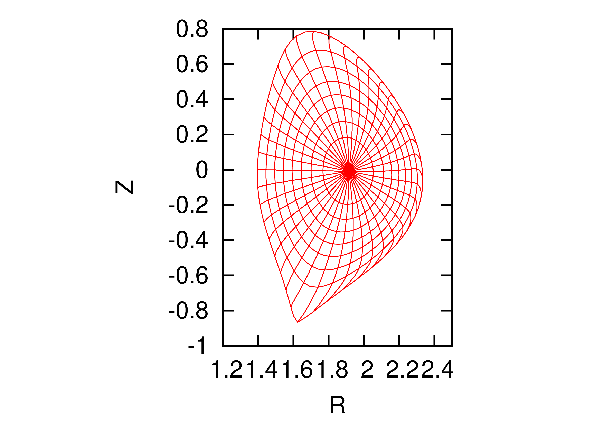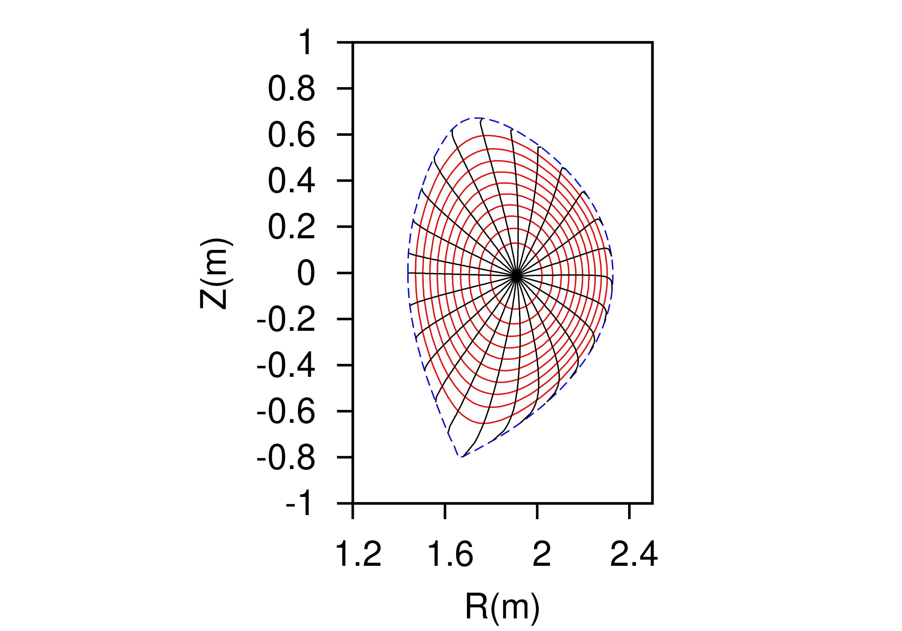 |
| 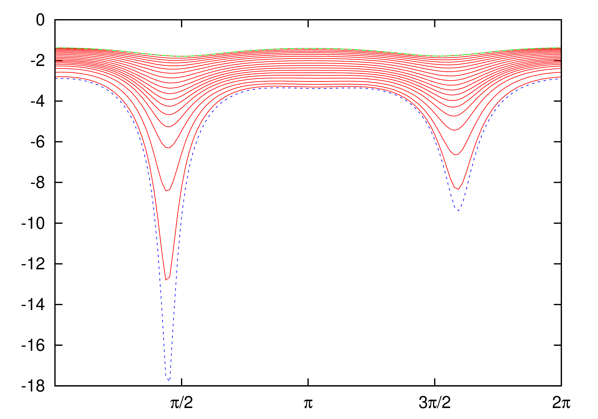 |
Metric elements of the coordinates, e.g., , are often needed in practical calculations. Next, we express these metric elements in terms of the cylindrical coordinates and their partial derivatives with respect to and . Note that, in this case, the coordinate system is while and are functions of and , i.e.,
| (9.2) |
| (9.3) |
Then and are written as
| (9.4) |
| (9.5) |
wehre , etc. Equations (9.4) and (9.5) can be solved to give
| (9.6) |
| (9.7) |
Using the above expressions, the Jacobian of coordinates, , is written as
 |
|||
i.e.,
| (9.9) |
Using this, Expressions (9.6) and (9.7) are written as
| (9.10) |
and
| (9.11) |
Then the elements of the metric matrix are written as
| (9.12) |
| (9.13) |
and
| (9.14) |
Equations (9.12), (9.13), and (9.14) are the expressions of the metric elements in terms of , , , , and . [Combining the above results, we obtain
| (9.15) |
Equation (9.14) is used in GTAW code. Using the above results, are written as
| (9.16) |
| (9.17) |
| (9.18) |
As a side product of the above results, we can calculate the arc length
in the poloidal plane along a constant surface,
, which is expressed as
Note that since we are considering the arc
length along a constant surface in  plane. Then the above expression is reduced to
plane. Then the above expression is reduced to
which agrees with Eq. (8.94).]
In some cases (e.g., turbulence simulation), model tokamak magnetic field, which is not an exact solution to the GS equation, is often used. In the model, the safety factor profile , toroidal field function , and the magnetic surface shape are given. To use this model in a simulation, we need to calculate its poloidal magnetic field, which is determined by the poloidal magnetic flux function . To determine , we need to use Eq. (8.86), i.e.,
| (9.20) |
and re-organize the formula as
| (9.21) |
which can be integrated to obtain and thus the poloidal magnetic field , where . The toroidal magnetic field can be obtained from by . In most papers, is chosen to be a constant.
A typical magnetic surface shape used in simulations is the Miller shape, which is given by
| (9.22) |
where is the radial coordinate,  , ,
and
, ,
and  are the Shafronov shift, triangularity, and
elongation profiles, which can be arbitrarily specified. For the special
case of being a constant, , and ,
this shape reduces to a concentric-circular magnetic field. An example
of calculating the poloidal field of the model field is given in Sec. 16. This kind of model field can be called theoretical
physicists' tokamak. Computational physicists often use this model for
code benchmarking purpose. The famous DIII-D cyclone base case is an
example, which was extensively used for benchmarking gyrokinetic
simulation of ion temperature driven turbulence.
are the Shafronov shift, triangularity, and
elongation profiles, which can be arbitrarily specified. For the special
case of being a constant, , and ,
this shape reduces to a concentric-circular magnetic field. An example
of calculating the poloidal field of the model field is given in Sec. 16. This kind of model field can be called theoretical
physicists' tokamak. Computational physicists often use this model for
code benchmarking purpose. The famous DIII-D cyclone base case is an
example, which was extensively used for benchmarking gyrokinetic
simulation of ion temperature driven turbulence.
Magnetic surface average of a physical quantity is defined by
| (10.1) |
where the volume integration is over a small volume between two adjacent flux surfaces with differing by . [This formula (with finite ) is used in TEK code to calculate the radial heat flux.]
The above definition can be written as
| (10.2) |
where the volume integration is over the volume enclosed by the magnetic surface labeled by .
The above 3D volume integration can be written as a 2D surface integration. The differential volume element is given by , where is the Jacobian of coordinates. equation (10.1) is written as
which is a 2D averaging over a magnetic surface. Noting that  is independent of ,
expression (10.3) can be written as
is independent of ,
expression (10.3) can be written as
| (10.4) |
where , which is the harmonic of , where is the toroidal mode number. Note that the surface averaging of any harmonic is zero. I.e., only the harmonic can contribute to the magnetic surface average.
In flux coordinates, Eq. (10.2) can be written as
where . (For the surface average, in some parts of these notes, I assume that the Jacobian is postive and thus the absolute value operator is dropped. In most part of this document, axisymmetry is assumed for , i.e., .)
The volume within a magnetic surface is written
| (10.6) |
Then the differential of with respect to is written as
| (10.7) |
Sometimes, we do not want the Jacobian to explicitly appear in the formula. This can be achieved by using Eq. (8.94), i.e.,
| (10.8) |
Then expression (10.4) is written as
(Equation (10.9) is used in GTAW code[14].)
The parallel current density appears in the flux diffusion equation. Let us derive a formula for it in the flux coordinates. Using , along with magnetic field expression (8.80) and the curl formula (8.42), we obtain
where , . Expression (10.10) is the contravariant form of . Taking dot product between Eqs. (8.80) and (10.10), we obtain
Using the defintion of the magnetic surface average, Eq. (10.5), i.e.,
we obtain
which agrees with Eq. (5) in Ref. [23].
This is an interesting way of defining flux within a magnetic surface using volume integration, instend of surface integration. Examine the meaning of the following volume integral:
| (11.1) |
where the volume is the volume within the magnetic surface labeled by . Using , the quantity can be further written as
| (11.2) |
Note that is not a single-value function of the spacial points. In order to evaluate the integration in Eq. (11.2), we need to select one branch of , which can be chosen to be . Note that function is not continuous at the branch cut . Next, we want to use the divergence theorem to convert the above volume integration to surface integration. Noting the discontinuity of the integrand at , the volume should be cut there, thus, generating two surfaces. Denote these two surfaces by and , then equation (11.2) is written as
where the orientation of surface is in the negative direction of , the orientation of is in the positive direction of , and the surface is the toroidal magnetic surface . The surface integration through is obviously zero since lies in this surface. Therefore, we have
Eq. (11.3) indicates that is the magnetic flux through the surface. This is the flux defined by Eq. (1.25), i.e.,
| (11.4) |
[We can also directly verify defined by Eq. (11.4) is the poloidal flux, without using the divergence theorem. Using the expression of the volume element ,
Note that the sign of the Jacobian appears in Eq. (11.5), which is due to the positive direction of surface is determined by the positive direction of , which in turn is determined by the sign of the Jacobian (In my code, however, the positive direction of is chosen by me and the sign of the Jacobian is determined by the positive direction of ). We can verify the sign of Eq. (11.5) is consistent with that in Eq. (1.25).]
Similarly, the toroidal flux within a flux surface is written as
 |
|||
In flux coordinates, is written as
from which, we can also obtain
| (11.9) |
and
| (11.10) |
Using , we obtain
| (11.11) |
Similarly, the toroidal current within a flux surface is written as
| (11.12) |
Let us express  in flux coordinates:
in flux coordinates:
Use Eq. (3.6), i.e.,
| (11.15) |
and Eq. (13.4), i.e.,
| (11.16) |
then is written as
Then the surface average is written as
Using this in Eq. (11.14), we obtain
Faraday's law
| (12.1) |
can be written in the integral form:
| (12.2) |
where is the flux linked with the loop. Choosing an axisymmetric loop along , and assuming is axisymmetric, Eq. (12.2) is written as
i.e.,
Using , the above equation is written as
| (12.3) |
Use Ohm's law
(where stands for all the terms on the rhs of Ohm's law, typically , where is the total current density and is the non-inductive part), to eliminate , then Eq. (12.3) is written as
| (12.4) |
Using to eliminate on the rhs, we obtain
| (12.5) |
Noting that , the above equation is simplified to
| (12.6) |
This is an evolution equation for the poloidal flux function in the lab frame.
Next, let us derive an evolution equation for the toroidal field function . The projection of Faraday's law (12.1) is written as
| (12.7) |
i.e.,
| (12.8) |
Use Ohm's law to eliminate , then Eq. (12.8) is written as
| (12.9) |
i.e.,
| (12.10) |
Next, let us write Eqs. (12.6) and (12.10) in a general magnetic coordinate system that is time-dependent (relative to the laboratory static coordinate system). Why do we need a magnetic coordinate system? Because it makes it easy to perform the magnetic surface average when we derive 1D transport equations. Then why do we require the magnetic coordinates to be time-dependent? Because the magnetic surface shapes are evolving, and thus a static transform can not remain conform to the evolving shapes.
For a time-dependent coordinate transform:
where stands for a laboratory static Cartesian
coordinate system , it
follows that
where
| (12.12) |
is the coordinate velocity. Further define
| (12.13) |
which is the fluid velocity observed in coordinate system.
Note that the flux evolution equation (12.6) is written in a laboratory static coordinate system, i.e.,
| (12.14) |
Then in time-dependent coordinate system, the above equation is written as
| (12.15) |
Noting , the above equation is simplified to
| (12.16) |
Now we restrict to be flux coordinates (i.e., contours of are contours of ) and remain flux coordinates when both and evolve. Then the rhs of Eq. (12.16) must be chosen to be independent of , i.e.,
| (12.17) |
where is a function to be determined. For later use, multiplying the above equation by :
| (12.18) |
and performing the magnetic surface average on it, we obtain
| (12.19) |
Next, consider the evolution equation for , Eq. (12.10), which can be written as
| (12.20) |
We note that . Then the above equation is written as
| (12.21) |
To facilitate later use, we multiply the above equation by the Jacobian J of coordinates:
i.e.,
Tansforming to time-dependent coordinate system, the above equation is written as
For notation ease, the subscripts () of the time derivative is dropped in the following, with the understanding that the time derivatives are taken with () held fixed. Equation (12.22) simplifies to
Noting that , the above equation is written as
which simplifies to
Use the well known relation (to be proved):
| (12.24) |
then Eq. (12.23) simplifies to
| (12.25) |
Integrating Eq. (12.25) over :
we obtain
| (12.26) |
Using the defintion of the surface average, Eq. (10.5), i.e.,

(where , is the volume enclosed by surface ), Eq. (12.26) is written as
| (12.27) |
Noting the relation (proof is given in Sec. A.1):
| (12.28) |
Eq. (12.27) is written as
Noting that , the above equation is simplified to
| (12.29) |
The toroidal magnetic flux is given by Eq. (11.8), i.e.,
Then the time partial derivative in coordinates is written as
Use Eq. (12.29), then Eq. (12.30) is written as
where use has been made of the fact that at .
If we choose as the toroidal magnetic flux, i.e., (or more general , where is an arbitrary time-independent monotonical function), then, by defintion
| (12.32) |
Combining this with Eqs. (12.31), we get
| (12.33) |
This is a condition that the coordinate velocity (and thus ) satisfies when you choose as .
Meanwhile, as is discussed above, the requirement of being flux coordinates imposes a constraint given by Eq. (12.17). Next, we combine this constraint with Eq. (12.33) to uniquely determine appearing in Eq. (12.17). Mutiplying Eq. (12.33) by and then adding it to Eq. (12.19), we obtain
which simplifies to ( terms cancel out)
i.e.,
| (12.34) |
Then the poloidal magnetic flux diffusion equation is written as
| (12.35) |
Note that it is in the moving flux coordinates that the poloidal magnetic flux diffusion can be written in the form given by Eq. (12.35). Before I did the above derivation, I considered Eq. (12.35) (which appears in many papers) as an approximate equation in static lab frame (approximating the toroidal component by the parallel component). It turns out that it is an exact equation in the moving coordinate system.
We can switch the role of and and do similar derivation as the above. I.e., we choose and derive an evolution equation for the toroidal flux . (It would be interesting to do this derivation. to be done.) But most researchers have chosen . Some reasons behind this choice are as follows. Like the poloidal flux, the toroidal flux is contributed by two parts: coils and plasma. Different from the poloidal flux, the toroidal flux is mainly contributed by the coils. This is because the plasma poloidal current (which contributes to the toroidal flux) is much smaller than the TF coil currents. Because TF coil currents usually do not change during one discharge, the toroidal flux remains almost constant in a discharge (small variation is contributed by the varying plasma poloidal current, which is much smaller than the TF coil current). We usually prefer to our coordinate not moving significantly with respect to the lab frame. So we prefer over .
A confusion I once had: if you choose , then can also be considered as a function of because is a function of . Then why does it matter which one is chosen in the above derivation? The reason why we can not easily switch between and is that thier relation is time-dependent, i.e., . This time-dependence will show up when we want to switch from one to another.
Assume , then Eq. (12.35) is written as
| (12.36) |
Using Eq. (10.12), the above equation is written as
| (12.37) |
Define by
| (12.38) |
where is typical value of the toroidal field (a space-time constant). Since is a time-independent function of , so can be used as the radial coordinate, i.e., . Then Eq. (12.37) is written as
| (12.39) |
which agrees with Eq. (8) in Ref. [23]. The radial derivative of volume is written as
| (12.40) |
where use has been made of Eq. (11.10), i.e., .
| (12.41) |
We know that and at the magnetic axis. We also know that the safety factor is nonzero at the magnetic axis. Then Eq. (12.41) implies
| (12.42) |
which serves as an inner boundary for the diffusion equation (12.39).
Using Eq. (11.18), the outer boundary condition can be written as
| (12.43) |
where
The fixed boundary equilibrium problem (also called the “inverse equilibrium problem” by some authors) refers to the case where the shape of a boundary magnetic surface is given and one is asked to solve the equilibrium within this magnetic surface. To make it convenient to deal with the shape of the boundary, one usually uses a general coordinates system which has one coordinate surface coinciding with the given magnetic surface. This makes it trivial to deal with the irregular boundary. To obtain the equilibrium, one needs to solve the GS equation in the general coordinate system.
Next we derive the form of the toroidal elliptic operator in a general curvilinear coordinate system. Specifically, we consider a curvilinear coordinate system , which is an arbitrary coordinate system except that is perpendicular to both and .
The toroidal elliptic operator takes the form given by Eq. (3.7), i.e.,
| (13.1) |
The gradient of is written as (note that is independent of )
| (13.2) |
Using this expression and the divergence formula (8.36), the elliptic operator in Eq. (13.1) is written
where the subscripts denotes partial derivatives,
is the Jacobian of the coordinate system .
In a flux coordinate system, is independent of , i.e., . Then the toroidal elliptic operator is written as
| (13.4) |
Using Eq. (13.3), the GS equation (4.13) is written
which is the form of the GS equation in coordinate system.
The toroidal elliptic operator in Eq. (13.3) can be written
| (13.6) |
where is defined by Eq. (8.77), i.e.,
| (13.7) |
Next, we derive the finite difference form of the toroidal elliptic operator. The finite difference form of the term is written
where
| (13.9) |
The finite difference form of is written
where
| (13.11) |
The finite difference form of is written as
| (13.12) |
Approximating the value of at the grid centers by the average of the value of at the neighbor grid points, Eq. (13.12) is written as
| (13.13) |
where
| (13.14) |
Similarly, the finite difference form of is written as
Using the above results, the finite difference form of the operator is written as
The coefficients are given by
| (13.16) |
| (13.17) |
and
| (13.18) |
where the Jacobian
 |
(13.19) |
The partial derivatives, ,
, , and ,
appearing in Eqs. (13.16)-(13.19) are
calculated by using the central difference scheme. The values of , ,
and at the middle points
are approximated by the linear average of their values at the neighbor
grid points.
The function and in the
GS equation are free functions which must be specified by users before
solving the GS equation. Next, we discuss one way to specify the free
functions. Following Ref. [15], we take
and to be of the forms
| (13.20) |
| (13.21) |
with and chosen to be of polynomial form:
| (13.22) |
| (13.23) |
where
 |
(13.24) |
with the value of on the
boundary, the value of
on the magnetic axis, , , ,
,  , and are free parameters.
Using the profiles of and
given by Eqs. (13.20) and (13.21), we obtain
, and are free parameters.
Using the profiles of and
given by Eqs. (13.20) and (13.21), we obtain
| (13.25) |
where , and
| (13.26) |
Then the term on the r.h.s (nonlinear source term) of the GS equation is written
| (13.27) |
The value of parameters ,
, and
in Eqs. (13.20) and (13.21), and the value of
and in Eqs. (13.22)
and (13.23) can be chosen arbitrarily. The parameter is used to set the value of the total toroidal
current. The toroidal current density is given by Eq. (A.79),
i.e.,
| (13.28) |
which can be integrated over the poloidal cross section within the boundary magnetic surface to give the total toroidal current,
Using
| (13.30) |
Eq. (13.29) is written as
| (13.31) |
from which we solve for , giving
| (13.32) |
If the total toroidal current is given, Eq. (13.32) can be used to determine the value of .
In the fixed boundary equilibrium problem, the shape of the boundary magnetic surface (it is also the boundary of the computational region) is given while the shape of the inner flux surface is to be solved. A simple analytical expression for a D-shaped magnetic surface takes the form
| (13.33) |
| (13.34) |
with changing from to . According to the definition in Eqs. (A.21), (A.22), and (A.24) we can readily verify that the parameters , , appearing in Eqs. (13.33) and (13.34) are indeed the minor radius, major radius, and ellipticity, respectively. According to the definition of triangularity Eq. (A.23), the triangularity for the magnetic surface defined by Eqs. (13.33) and (13.34) is written as
| (13.35) |
Another common expression for the shape of a magnetic surface was given by Miller[7, 21], which is written as
| (13.36) |
| (13.37) |
Note that Miller's formula is only slightly different from the formula (13.33). For Miller's formula, it is easy to prove that the triangularity is equal to (instead of as given in Eq. (13.35)).
In the iterative metric method[10] for solving the fixed boundary equilibrium problem, we need to provide an initial guess of the shape of the inner flux surface (this initial guess is used to construct a initial generalized coordinates system). A common guess of the inner flux surfaces is given by
| (13.38) |
| (13.39) |
where is a parameter, is
a label parameter of flux surface. If the shape of the LCFS is given by
Eqs. (13.33) and (13.34), then Eqs. (13.38)
and (13.39) are written as
| (13.40) |
| (13.41) |
Fig. 13.1 plots the shape given by Eqs. (13.40)
and (13.41) for 0.4,
, , , and
 with varying from zero
to one.
with varying from zero
to one.
Figure 13.1. Shape of flux surface
given by Eqs. (13.40) and (13.41).
Left figure: points with the same value of
are connected to show coordinate
surface; Right figure: dot plot. Parameters are |
The tokamak equilibrium problem where the shape of the LCFS is given is called fixed boundary equilibrium problem. I wrote a numerical code that uses the iterative metric method[10] to solve this kind of equilibrium problem. Figure 13.2 describes the steps involved in the iterative metric method.
To benchmark the numerical code, I set the profile of and according to Eqs. (A.37) and (A.38) with the parameters , , , and . The comparison of the analytic and numerical results are shown in Fig. 13.3.
Figure 13.3. Agreement between the magnetic surfaces (contours of ) given by the Solovev analytic formula and those calculated by the numerical code. The two sets of magnetic surfaces are indistinguishable at this scale. The boundary magnetic surface is selected by the requirement that in the Solovev formula (A.43). Parameters: , . |
Note that the parameter in the Solovev equilibrium seems to be not needed in the numerical calculation. In fact this impression is wrong: the parameter is actually needed in determining the boundary magnetic surface of the numerical equilibrium (in the case considered here is chosen as ).
With the pressure increasing, the magnetic axis usually shifts to the low-field-side of the device, as is shown in Fig. 13.4.
| 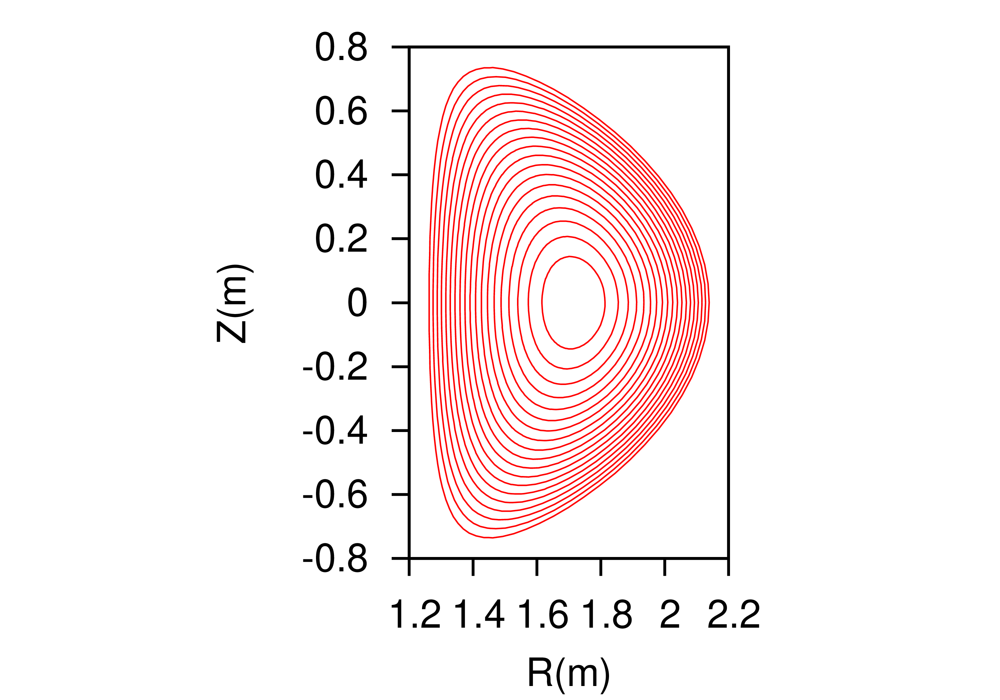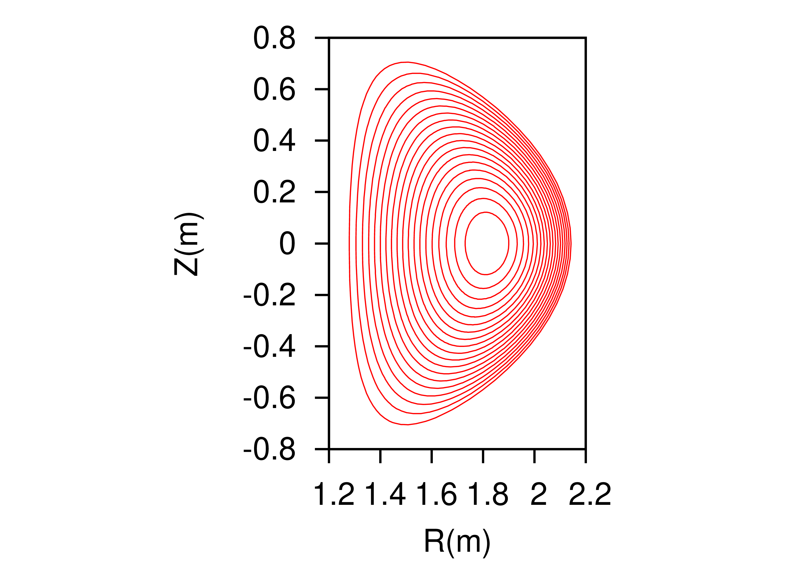 |
In the GS equation, is one of the two free
functions which can be prescribed by users. In some cases, we want to
specify the safety factor profile  ,
instead of , in solving the
GS equation. Next, we derive the form of the GS equation that contains
, rather than , as a free function. The safety factor defined
in Eq. (8.86) can be written
,
instead of , in solving the
GS equation. Next, we derive the form of the GS equation that contains
, rather than , as a free function. The safety factor defined
in Eq. (8.86) can be written
Equation (13.44) gives the relation between the safety factor and the toroidal field function . This relation can be used in the GS equation to eliminate in favor of , which gives
| (13.45) |
| (13.46) |
Note that this expression involves the flux surface average, which depends on the flux surface shape and the shape is unknown before is determined.
Multiplying Eq. (A.102) by gives
| (13.47) |
Surface-averaging the above equation, we obtain
| (13.48) |
| (13.49) |
| (13.50) |
| (13.51) |
| (13.52) |
Substitute Eq. (13.46) into the above equation to eliminate , we obtain
| (13.53) |
Eq. (13.53) agrees with Eq. (5.55) in Ref. [15].
| (13.54) |
| (13.55) |
where
| (13.56) |
The GS equation is
| (13.57) |
| (13.58) |
| (13.59) |
Using Eq. (13.55) to eliminate in the above equation, the coefficients before () is written as
Substituting the expression of into the above equation, we obtain
which is equal to the expression (5.58) in Ref. [15]. The coefficient before is written as
Define
| (13.62) |
| (13.63) |
Using
| (13.64) |
Eq. () is written as
| (13.65) |
| (13.66) |
| (13.67) |
| (13.68) |
| (13.69) |
| (13.70) |
 |
(13.71) |
| (13.72) |
| (13.73) |
| (13.74) |
But the expression of is slightly different from that given in Ref. [15] [Eq. (5.57)]. Using the above coefficients, the GS equation with the -profile held fixed is written as
| (13.75) |
In Sec. 8.12, we introduced the local safety factor . Equation (8.82)
indicates that if the Jacobian is chosen to be of the particular form
, then the local safety
factor is independent of ,
i.e., magnetic line is straight in plane. On the
other hand, if we want to make field line straight in
plane, the Jacobian must be chosen to be of the specific form . We note that, as mentioned in
Sec. 8.14, the poloidal angle is fully determined by the
choice of the Jacobian. The specific choice of
is usually too restrictive for achieve a desired poloidal resolution
(for example, the equal-arc poloidal angle can not be achieved by this
choice of Jacobian). Is there any way that we can make the field line
straight in a coordinate system at the same time ensure that the
Jacobian can be freely adjusted to obtain desired poloidal angle? The
answer is obvious: Yes, we can achieve this by defining a new toroidal
angle that generalizes the usual (cylindrical)
toroidal angle . Define a new
toroidal angle by[9]
| (14.1) |
where is a unknown function to be determined by the constraint of field line being straight in plane. Using Eq. (8.83), the new local safety factor in coordinates is written as
To make the new local safety factor be independent of , the right-hand side of Eq. (14.2) should be independent of , i.e.,
| (14.3) |
where can be an arbitrary function of . A convenient choice for is , i.e., making the new local safety factor be equal to the original global safety factor, i.e., . In this case, equation (14.3) is written as
| (14.4) |
which, on a magnetic surface labed by , can be integrated over to give
| (14.5) |
where is an starting poloidal angle arbitrarily chosen for the integration, and is the constant of integration. In the following, both and will be chosen to be zero. Then the above equations is written
| (14.6) |
Substituting the above expression into the definition of (Eq. 14.1), we obtain
| (14.7) |
which is the formula for calculating the general toroidal angle. If is a straight-field line poloidal angle, then in Eq. (14.7) reduces to the usual toroidal angle .
In summary, magnetic field line is straight in plane with slope being if is defined by Eq. (14.7). In this method, we make the field line straight by defining a new toroidal angle, instead of requiring the Jacobian to take particular forms. Thus, the freedom of choosing the form of the Jacobian is still available to be used later to choose a good poloidal angle coordinate. Note that the Jacobian of the new coordinates is equal to that of . [Proof:
] Also note that defined by Eq. (14.6) is a periodic function of . [Proof: Equation (14.6) implies that
]
[In numerical implementation, the term appearing in is computed by using
For later use, from Eq. (14.6), we obtain
This formula is used in GTAW code, where the derivative is calculated numerically by using the central difference scheme.]
Recall that the contravariant form of the magnetic field in coordinates is given by Eq. (8.83), i.e.,
 |
(14.11) |
Next, let us derive the corresponding form in coordinates. Using the definition of , equation (14.11) is written as
Using Eq. (14.4), the above equation is simplified as
Equation (14.13) is the contravariant form of the magnetic field in coordinates.
The expression of the magnetic field in Eq. (14.13) can be rewritten in terms of the flux function and discussed in Sec. (). Equation (14.13) is
| (14.14) |
which, by using Eq. (), i.e., , is rewritten as
| (14.15) |
which, by using Eq. (), i.e., , is further written as
| (14.16) |
Noting the simple fact that
| (14.17) |
where is a constant, we conclude that
| (14.18) |
(since , where the part acts as a constant when we hold and constant), i.e., the symmetry property with respect to the new toroidal angle is identical with the one with respect to the old toroidal angle . On the other hand, generally,
| (14.19) |
and
| (14.20) |
In the special case that is axisymmetric (i.e., is independent of in coordinates), then two sides of Eqs. (14.19) and (14.20) are equal to each other. Note that the partial derivatives and in Sec. 14.1 and 14.2 are taken in coordinates. Because the quantities involved in Sec. 14.1 and 14.2 are axisymmetric, these partial derivatives are equal to their counterparts in coordinates.
In Sec. 9, we have provided the steps to construct the magnetic surface coordinate system . Only one additional step is needed to construct the straight-line flux coordinate system . The additional step is to calculate the generalized toroidal angle according to Eq. (14.1), where is obtained from Eq. (14.6). Also note that the Jacobian of coordinates happens to be equal to that of coordinates.
 in coordinates
in coordinatesThe usefulness of the contravariant form [Eq. (14.13] of the magnetic field lies in that it allows a simple form of operator in a coordinate system. (The operator is usually called magnetic differential operator.) In coordinate system, by using the contravariant form Eq. (14.13), the operator is written as
Next, consider the solution of the following magnetic differential equation:
| (14.22) |
where is some known function. Using Eq. (14.21), the magnetic differential equation is written as
| (14.23) |
Note that the coefficients before the two partial derivatives of the above equation are all independent of and . This indicates that different Fourier harmonics in and are decoupled. As a result of this fact, if is Fourier expanded as
| (14.24) |
(note that, following the convention adopted in tokamak literature[9], the Fourier harmonics are chosen to be , instead of ), and the right-hand side is expanded as
| (14.25) |
then Eq. (14.23) can be readily solved to give
| (14.26) |
The usefulness of the straight line magnetic coordinates lies in that, as mentioned previously, it makes the coefficients before the two partial derivatives both independent of and , thus, allowing a simple solution to the magnetic differential equation.
Equation (14.26) indicates that, for the differential equation (14.22), there is a resonant response to a perturbation on a magnetic surface with . Therefore, the magnetic surface with is called the “resonant surface” for the perturbation .
The phase change of the perturbation along a
magnetic field is given by ,
which can be written as  .
Since on a resonant surface, this indicates that
there is no phase change along a magnetic field line on a resonant
surface, i.e., the parallel wavenumber is zero
on a resonant surface.
.
Since on a resonant surface, this indicates that
there is no phase change along a magnetic field line on a resonant
surface, i.e., the parallel wavenumber is zero
on a resonant surface.
Next, we discuss a special poloidal angle, which is useful in describling a perturnbation of single harmonic . This poloidal angle is defined by
| (14.27) |
where are the mode numbers of the perturbation. The poloidal angle is often called helical angle and is special in that its definition is associated with a perturbation (the mode numbers of the perturbation appear in the definition) while the definition of the poloidal angles discussed previously only involve the equilibrium quantities.
The poloidal angle is designed to make 3D perturbations of the form reduce to 2D perturbations, i.e.,
| (14.28) |
It is ready to verify that the Jacobian of coordinates is equal to that of coordinates [proof: ].
The component of along direction (i.e., the covariant component) is written
At the resonant surface , equation (14.29) implies . The direction defines the reconnecting component of the magnetic field?
On the other hand, the component of along direction is written
Using (14.30) and (14.29), the relation between and is written as
| (14.31) |
In the above, we have obtained the covariant form of the magnetic field in coordinates (i.e., Eq. (8.80)). Next, we derive the corresponding form in coordinate. In order to do this, we need to express the basis vector in terms of , , and basis vectors. Using the definition of the generalized toroidal angle, we obtain
Using Eq. (14.32), the covariant form of the magnetic field, Eq. (8.80), is written as
| (14.33) |
This expression can be further simplified by using equation (14.4) to eliminate , which gives
Using , the above equation is written as
Equation (14.35) is the covariant form of the magnetic field in coordinate system. For the particular choice of the radial coordinate and the Jacobian (i.e., Boozer's Jacobian, discussed in Sec. 14.9), equation (14.35) reduces to
| (14.36) |
with . The magnetic field
expression in Eq. (14.36) frequently appears in tokamak
literature[30]. In this form, the coefficients before both
and depends on only the
radial coordinate. In terms of ,
the Jabobian can also be written as
| (14.37) |
In solving the MHD eigenmode equations in toroidal geometries, besides the operator, we will also encounter another surface operator . Next, we derive the form of the this operator in coordinate system. Using the covariant form of the equilibrium magnetic field [Eq. (14.35)], we obtain
| (14.38) |
Using this, the operator is written as
which is the form of the operator in coordinate system.
Examining Eq. (14.40), we find that the coefficients before
the two partial derivatives will be independent of
and if the Jacobian is
chosen to be of the form ,
where is some magnetic surface function. It is
obvious that the independence of the coefficients on
and will be advantageous to some applications.
The coordinate system with the particular choice
of is called the Boozer coordinates. The
usefulness of the new toroidal angle is
highlighted in Boozer's choice of the Jacobian, which makes both and be a constant-coefficient
differential operator. For other choices of the Jacobian, only the operator is a constant-coefficient differential
operator.
In solving the MHD eigenmode equations in toroidal geometry, we also need the radial differential operator . Next, we derive the form of the operator in coordinates. Using
the radial differential operator is written as
where and are given respectively by Eqs. (14.10) and (14.4). Using the above formula, is written as
| (14.42) |
This formula is used in GTAW code.
In coordinates, a magnetic field line is
straight in plane with the slope being . So the equation for magnetic
field lines is given by ,
where is a constant in
plane. Note that can be used to label different
magnetic field lines on a magnetic surface. This motivates us to use
, i.e.,
| (15.1) |
to as a new coordinate to replace .
Then we obtain a new set of coordinate:  ,
which are called field-line-following coordinates. Using Eqs. (15.1)
and (14.7), can be written as
,
which are called field-line-following coordinates. Using Eqs. (15.1)
and (14.7), can be written as
where is the local safety factor. (If we choose
the straight-field-line ,
then is written as .)
Define , which is called
tor_shift in TEK code, then .
In TEK, I choose with
corresponding to the high-field-side midplane, and
is increasing along the counter-clockwise direction wehn viewed along
. There are two reasons why
is chosen this way: 1. The toroidal shift remain small near the low-field-side . This may be good for spatial resolution in
this important region where ballooning modes often have larger
amplitude. 2. The cut, i.e., , is far away from the important
low-field-side. The gyrokinetic field equations are not solved at . Perturbations there need to
obtained by using interpolations at the cut,
i.e., infer values of perturbations on
gridpoints at from the corresponding values at
 . Numerical errors more
likely appear there. So we prefer that the cut
is located in less important area (area where mode amplitude is small).
. Numerical errors more
likely appear there. So we prefer that the cut
is located in less important area (area where mode amplitude is small).
In coordinates, the magnetic field in Eq. (14.13) is written as
| (15.3) |
which is called the Clebsch form. The direction
| (15.4) |
is parallel (or anti-parallel) to the magnetic field direction. Due to this fact, coordinates are usually called “field-line-following coordinates” or “field-aligned coordinates” [2, 5].
Equation (15.3) implies that
| (15.5) |
and
| (15.6) |
i.e., both and are
constant along a magnetic field line. Taking scalar product of Eq. (15.3) with , we
obtain
| (15.7) |
which is nonzero, i.e., only among is changing along a magnetic field line. (Here is the Jacobian of the coordinate system , which happens to be equal to the Jacobian of
coordinates.)
Using Eq. (15.3), the magnetic differential operator in the new coordinate system is written
| (15.8) |
which is just a partial derivative over , as is expected, since only is changing along a magnetic field line.
By the way, note that , i.e., the magnetic field lines are straight with zero slope on plane.
The fact implies that is
constant along a magnetic field line. At first glance, a magnetic line
on an irrational surface seems to sample all the points on the surface.
This seems to indicate that is a constant on
irrational surfaces. However, must be varying so
that it can provide a suitable toroidal coordinate. I had once been
confused by this conflict for a long time. The key point to resolve this
confusion is to realize that it is wrong to say there is only one
magnetic line on an irrational surface, i.e. it is wrong to say a
magnetic line on an irrational surface samples all the points on the
surface. There are still infinite number of magnetic field lines that
can not be connected with each other on an irrational surface. Then the
fact does not imply that
must be the same on these different magnetic field lines. In fact,
although , the gradient of
on a flux-surface along the perpendicular
direction is nonzero, i.e., .
[Proof:
which is obviously nonzero.] This indicates that
is not constant on a flux-surface. Equation (15.10) also
indicates that the perpendicular gradient becomes infinity at points
where (i.e., X-points).
In coordinates, is
perpendicular to . However,
in field-line-following coordinates ,
is not perpendicular to . Therefore is not along the
binormal direction .
It is widely believed that turbulence responsible for energy transport in tokamak plasmas usually has , where and are the parallel and perpendicular wavenumbers, respectively. Due to this elongated structure along the parallel direction, less grids can be used in the parallel direction than that in the perpendicular direction in turbulence simulation. In this case, the field-aligned coordinates provide suitable coordinates to be used, where less gridpoints can be used for coordinate in simulations and even some derivatives can be neglected (high-n approximation), which simplifies the equations that need to be solved. There is another reason why almost all gyrokinetic codes use field-aligned coordinates: the stability of numerical algorthims is improved when we use coarse grids in the parallel direction because the parallel Courant condition (for explicit schemes) can be more easily satisfied (especially for the cases with kinetic electrons), where is the parallel grid spacing, which is larger when coarse grids are used in the parallel direction. This is also mentioned in Ref. [22] and it seems right from my experiences of testing several algorithms. This can also be understood in the following way: the coarse parallel grid automatically filters out physically irrelevant but numerically problematic high- modes, permitting much longer time steps for explicit time stepping, in both particle and fluid codes[11].

The generalized toroidal angle is defined by Eq.
(15.2), i.e., ,
where . The gradient of is then written as
Then
| (15.12) |
 |
(15.13) |
Another method of computing the above quantities: Using Eqs. (9.10) and (9.11), expression (15.11) is written as
 |
|||
(Note that is discontinuous across the cut.) Then
The figures below plot the spatial variation of some quantities.
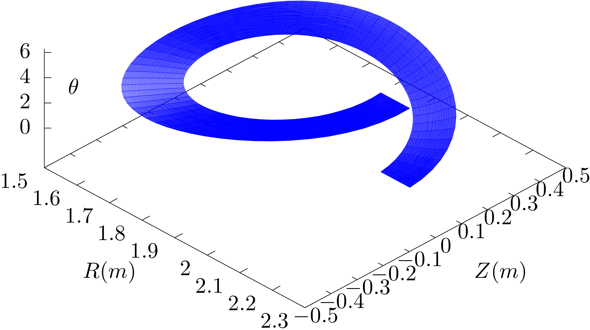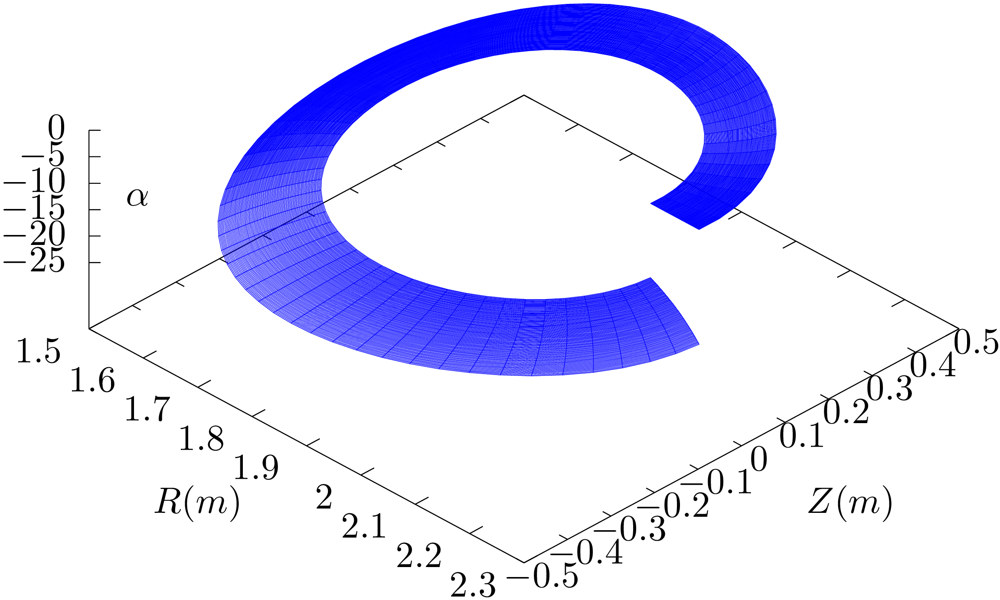 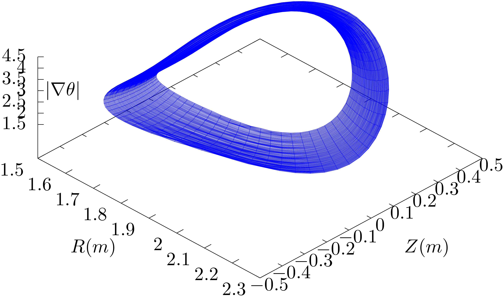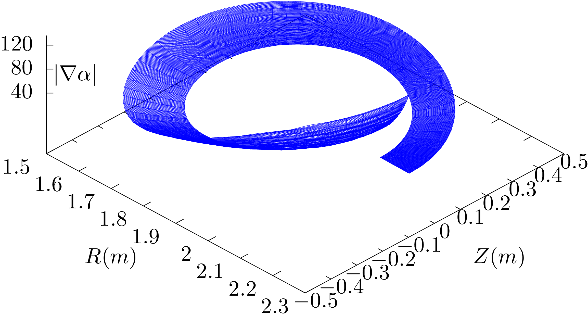
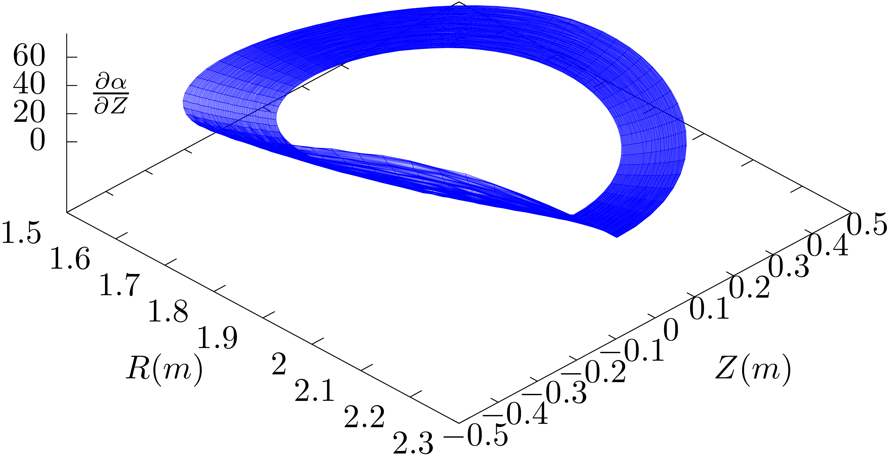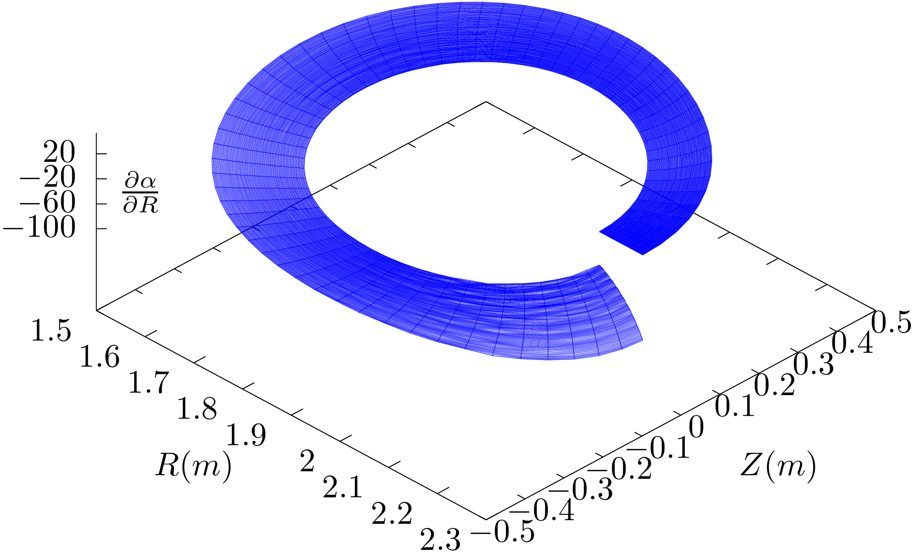 |
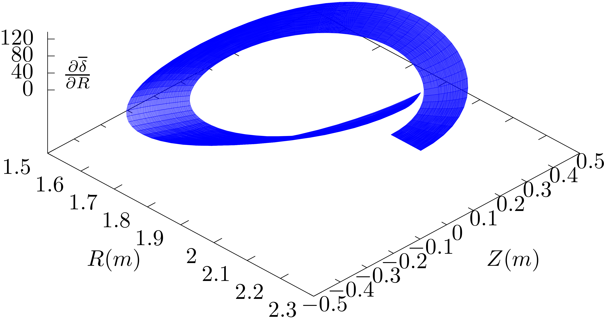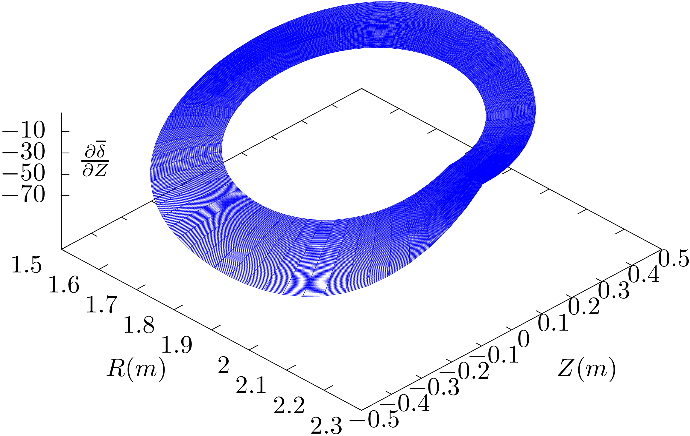 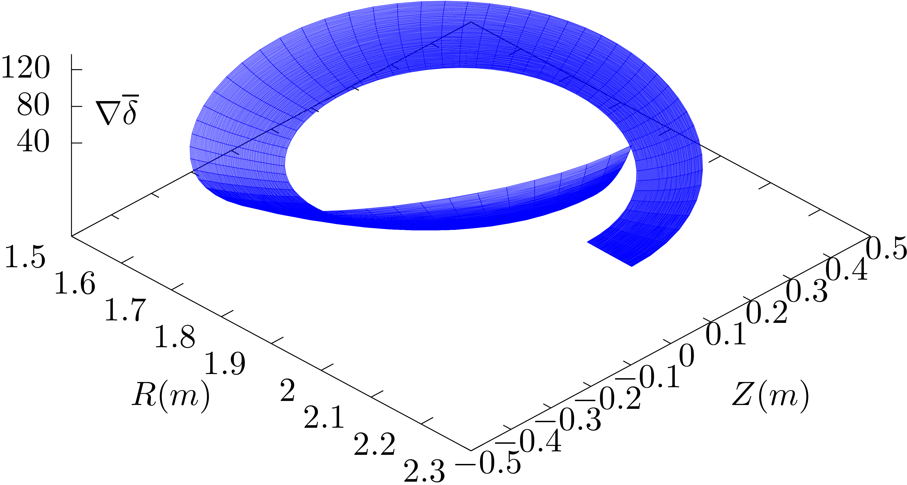
|
In GEM[6] and GENE[12] codes, the
field-aligned coordinates are defined by
| (15.17) |
| (15.18) |
| (15.19) |
where is an arbitrary flux surface label with
length dimension, which is often chosen in GEM to be the
minor radius of a magnetic surface in the midplane. Here and are constant quantities of
length dimension, is the minor radius of a
reference magnetic surface (usually corresponding to the center of the
radial simulation box), is the major radius of
the magnetic axis, is the safety factor value on
the surface. The constant length introduced in the definition of is
to make approximately correspond to the length
along the field line in the large-aspect ratio limit. The constant
length  introduced in the definition of is to make corresponds to the
arc-length in the poloidal plane traced by a field line when its usual
toroidal angle increment is . This explanation makes
look like a poloidal coordinate whereas is
actually a toroidal coordinate.
introduced in the definition of is to make corresponds to the
arc-length in the poloidal plane traced by a field line when its usual
toroidal angle increment is . This explanation makes
look like a poloidal coordinate whereas is
actually a toroidal coordinate.
Next, let us calculate the wave number along the direction, , for a mode with toroidal wave number . The wavelength along the direction, , is given by
| (15.20) |
Then the wavenumber is written as
| (15.21) |
On the other hand, the poloidal wavenumber is given by
| (15.22) |
where is the poloidal mode number of the mode in
coordinates. If the mode has the property , i.e., , then is equal to the . The motivation of introducing the
constant length in the definition of is to make for a mode with .
Some authors call or by the name “binormal wavenumber”, which is not an appropriate name in my opinion. Some authors call the binormal direction, which is also an inappropriate name since neither nor is along the binormal direction .
In this section, I try to visualize gridpoints in the field aligned
coordinates. The directions of the covariant basis vectors of coordinates are as follows:
| (15.23) |
 |
(15.24) |
| (15.25) |
Here is a combination of the usual radial and
toroidal direction, which needs some clarification. Note that, is related to by Eq. (15.2),
i.e.,
| (15.26) |
(where the second equality becomes exact if is
the straight-field-line poloidal angle defined in Sec. 8.15.5.),
which indicates that, for and , the usual toroidal angle
is changing when changing and holding and fixed. Figure 15.4b
shows how the usual toroidal angle changes when
we change and hold and
fixed.
The relation given by Eq. (15.26)
indicates that the toroidal shift along for a
radial change form to is
given by , which is larger on
isosurface with larger value of . An example for this is shown in Fig. 15.5
for , where
has larger toroidal shift than that in Fig. 15.4 for  .
.
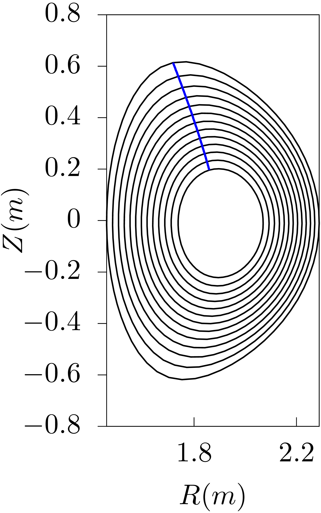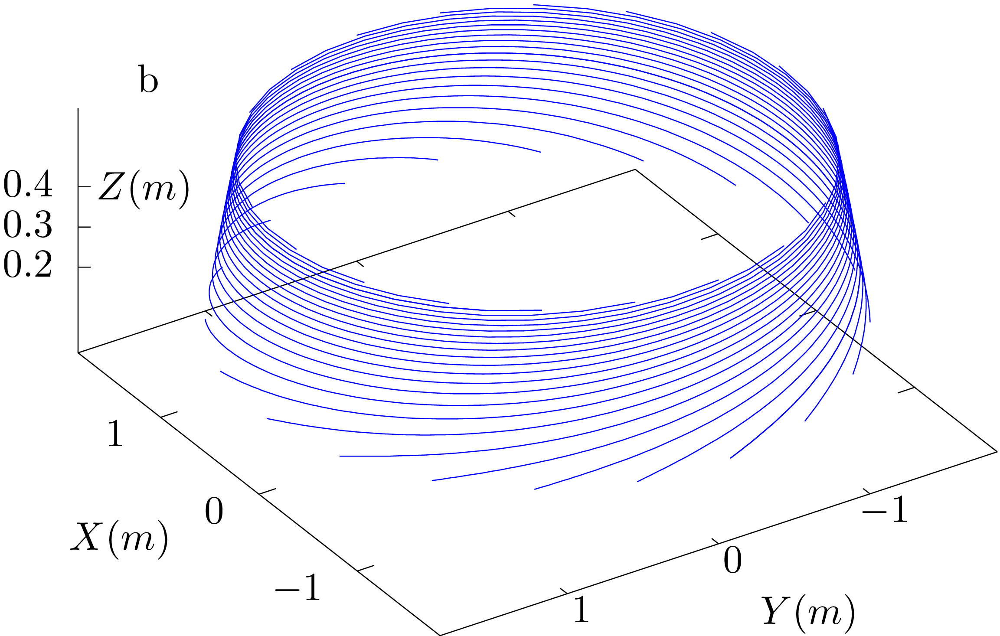
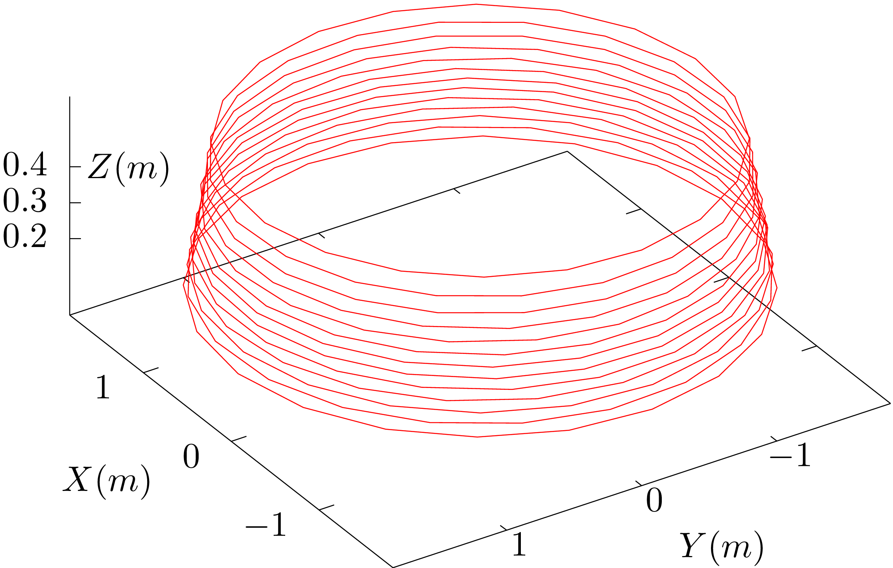 |
The curves can be understood from another
perspective. Examine a family of magnetic field lines that start from
and but different radial
coordinates. These starting points all have the same value of , which is equal to . When following these field lines to another
isosurfce of , the
intersecting points of these field lines with the
isosurface will trace out a line with . Examine another family of
magnetic field lines similar to the above but with the starting toroidal
angle . They will trace out
another line (with )
on the isosurface. Continue the process, we
finally get those curves in Fig. 15.4b and Fig. 15.5b.
For a harmonic in coordinates given by , the radial wave number is . Let us calculate the
corresponding radial wavenumber in the new
coordinates , which is
defined by
| (15.27) |
where the phase is given by . Then the above expression is written as
Using Using , the above expression is written as
where . This result indicates
that, compared with the radial wavenumber in coordinate system , the radial wavenumber in the new
coordinate system has an increment . For nonzero magnetic shear () and nonzero poloidal location (), the increment can be
large for modes with toroidal mode number .
Then we need to use more radial grid number (compared what is needed in
coordinates) to resolve the radial variation.
This is one of disadvantage of using field-aligned coordinates. If the
saving associated with using less parallel grid number out-weights the
cost associated with using more radial grid number, we obtain a net
saving in using the field-aligned coordinates.
Let us examine how many grid points are needed
to resolve the dependence in
coordinates on the high-field side ().
Assume , then at is given by . The corresponding wave-length is given by
. The grid spacing should be less than half of this wave-length (sampling
theorem). Then the grid number should satisfy that
| (15.30) |
where is the radial width of the computational domain.
The number of Fourier harmonics that need to be included is given by
| (15.31) |
For DIII-D cyclone base case, choose the radial coordinate as . At the radial location , , , then . Then for the radial width .
Figure 15.6 plots  lines on the isosurfaces, which are chosen to be on the
low-field-side midplane. On surface, lines are identical to lines. On
surface, each line has
large shift. In old version of my code, surfaces are chosen as the
cuts (in the new version ). A
connection condition for the perturbations is needed between these two
surfaces. This connection condition is discussed in Sec. 15.6.2.
lines on the isosurfaces, which are chosen to be on the
low-field-side midplane. On surface, lines are identical to lines. On
surface, each line has
large shift. In old version of my code, surfaces are chosen as the
cuts (in the new version ). A
connection condition for the perturbations is needed between these two
surfaces. This connection condition is discussed in Sec. 15.6.2.
in field-line-following coordinates Since and correspond to the same spatial point, a real space continuous quantity expressed in terms of coordinates , i.e., , must satisfy the following periodic conditions along :
| (15.32) |
Since and correspond to the same spatial point, must satisfy the following periodic conditions along :
| (15.33) |
Since and correspond to
the same spatial point, a real space continuous quantity expressed in terms of field-line-following coordinates
, i.e., , must satisfy the following periodic condition
along :
| (15.34) |
However, generally there is no periodic condition along ,
| (15.35) |
because and are generally not the same spatial point. In fact, equation (15.2) implies, for point , its toroidal angle is given by
| (15.36) |
while for point , its toroidal angle is given by
| (15.37) |
i.e., and are different
by . From this, we know that
and correspond to the
same spatial point. Therefore we have the following periodic condition:
| (15.38) |
or equivalently
| (15.39) |
For the fully kinetic ion module of GEM code that I am developing, is chosen in the range . The condition (15.39) imposes the following boundary condition:
 |
(15.40) |
If is on a grid, is
usually not on a grid. Therefore, to get the value of  , an interpolation of the discrete date over
the generalized toroidal angle (or equivalently
) is needed, as is shown in
Fig. 15.7.
, an interpolation of the discrete date over
the generalized toroidal angle (or equivalently
) is needed, as is shown in
Fig. 15.7.
contours on a
magnetic surface
Figure 15.8 compares a small number of
contours and contours on a magnetic surface.
As is shown in the left panel of Fig. 15.8, with fixed, an curve reaches its
starting point when changes from zero to . However, as shown in the right
panel of Fig. 15.8, with fixed, an
curve (i.e. a magnetic field line) does not
necessarily reach its starting point when
changes from zero to . There
is a toroidal shift, ,
between the starting point and ending point. Therefore there is
generally no periodic condition along since is not always an integer. A mixed periodic condition
involves both and is
given in (15.38).
In field-line-following coordinates ,
a toroidal harmonic of a physical perturbation can be written as
| (15.41) |
where is the toroidal mode number, , which is not necessary an integer, is introduced to describe the variation along a field line. The periodic condition given by Eq. (15.38) requires that
| (15.42) |
To satisfy the above condition, we can choose
| (15.43) |
where is an arbitrary integer, i.e.,
| (15.44) |
We are interested in perturbation with a slow variation along the field line direction (i.e., along ) and thus we want the value of to be small. One of the possible small values given by expression (15.44) is to choose , so that is given by
| (15.45) |
where N is a function that return the nearest integer of its argument, and is the maximal and minimal value of the safety factor in the radial region in which we are interested. [In the past, I choose . However, in this case is not a continuous function of and thus is not physical.] This form is used to set the initial density perturbation in the fully kinetic code I am developing. Note that in Eq. (15.45) depends on the radial coordinate through . Also note that here is different from the poloidal mode number in coordinate system. It is ready to show that the perturbation given by Eq. (15.41) with and has large poloidal mode number when expressed in coordinates. [Proof: Expression (15.41) can be written as
| (15.46) |
Assume that is the straight-field-line poloidal angle in coordinate system, then and the above equation is written as
| (15.47) |
which indicates the poloidal mode number in coordinates is given by . For the case with and , is much larger than one.]
Since contours on a magnetic surface are
magnetic field lines, they span out the 3D shape of magnetic surface
when there are many contours on a magnetic
surface, as is shown by the right-panel of Fig. 15.9.
contours in a
toroidal annulus
Figure 15.10 compares the
coordinate surface of coordinates with the coordinate surface of
coordinates.
| 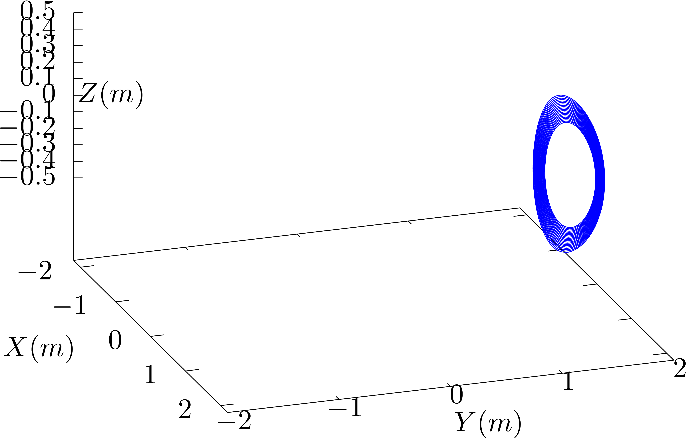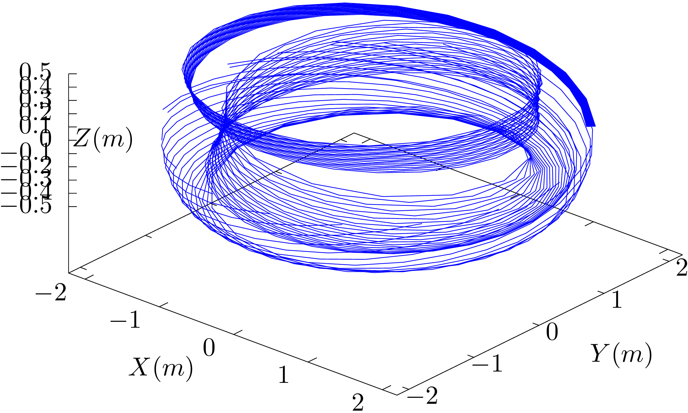 |
Figure 15.11. The same plot as in Fig. 15.10 but with a larger radial range. , where is the normalized poloidal magnetic flux. |
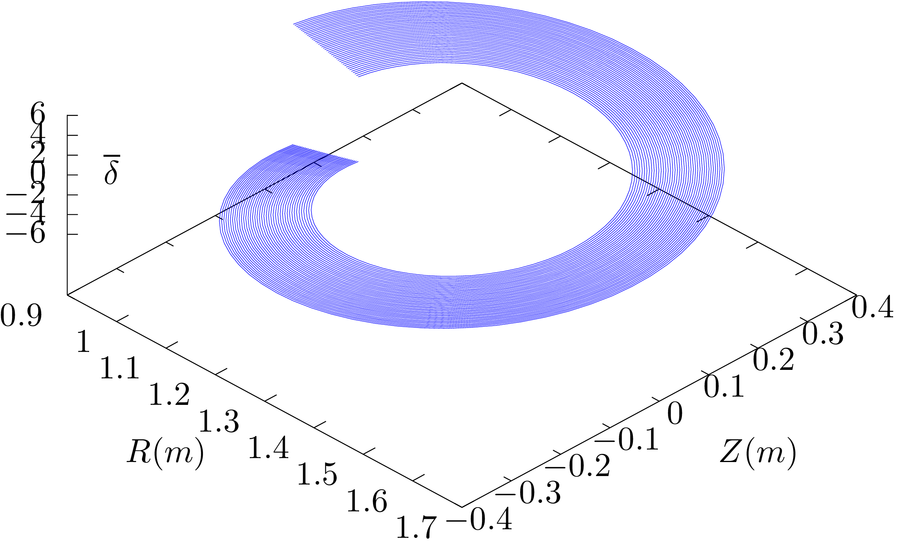 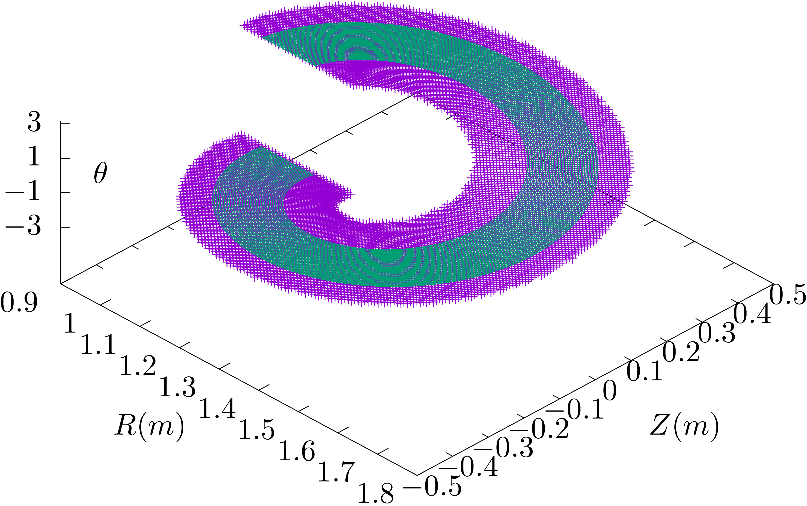
|
|
The above grid is often called “flux-tube”, since it is created by following field lines, and it looks like a tube if the field lines are very near to each other (e.g., when we choose a very narrow radial and toroidal region to start from). Since no magnetic field line passes through the sides of the tube, the flux through any cross section of the tube is equal. The term “flux tube” is often used in astrophysics.
Most gyrokinetic simulation codes use field-line-following coordinates in constructing spatial mesh. The mesh is conceptually generated by the following three steps: (1) selecting some initial points; (2) tracing out magnetic-field-lines passing through these points; (3) choose the intersecting points of these field-lines with a series of chosen surfaces as the final grid-points. The initial points and the chosen surfaces differ among various codes and thus the resulting grid differs. Next, let us discuss some examples.
Given the definition of coordinates, first
choose  points at with
. (The
plane is chosen to be near the low-field-side midplane.) Then trace out
the magnetic-field-lines passing through these points for one poloidal
circuit (poloidal angle range: )
and record the intersection points of these field-lines with various
planes. This gives a 2D grid [
surface for a fixed value of ].
After this, we rotate the 2D grid toroidally to get the 3D grid.
Ususally we consider a toroidal wedge rather than a full torus (to
reduce computational cost). So the 2D grid is rotated toroidally by
, where .
points at with
. (The
plane is chosen to be near the low-field-side midplane.) Then trace out
the magnetic-field-lines passing through these points for one poloidal
circuit (poloidal angle range: )
and record the intersection points of these field-lines with various
planes. This gives a 2D grid [
surface for a fixed value of ].
After this, we rotate the 2D grid toroidally to get the 3D grid.
Ususally we consider a toroidal wedge rather than a full torus (to
reduce computational cost). So the 2D grid is rotated toroidally by
, where .
Note that the gridpoints on surface usually do
not coincide those on surface due to the
toroidal shift along the field line arising when the safety factor is
irrational. Interpolation can be used to map physical variables defined
on gridpoints in plane to those in plane.
Given the definition of coordinates, 2D grid-points can be chosen on plane based on coordinates. Then trace out the magnetic-field-lines starting from these points for one toroidal circuit and record the intersection points of these field-lines with planes, where , . It is obvious that the resulting mesh are not toroidally symmetrical. And also the grids on plane differ from those on plane. Interpolation can be used to mapping physical variables defined on grid-points of to those of plane. In this case, the number of “toroidal grid-points” (i.e., the number of poloidal planes) is actually the number of grid-points in the parallel direction within one toroidal circuit.
XGC1 can handle the region outside of the LCFS. Here we
only discuss the region inside the LCFS. At each radial gridpoint on
plane, follow the magnetic field line starting
form this point for one poloidal loop and record the intersection points
of this field-line with planes, where , .
For the case , one
magnetic-field-line will have more than one intersection points on some
poloidal planes. Repeat tracing the field line for each radial location.
Then project (toroidally) all the intersection points on different
poloidal planes to a single poloidal plane and rotate (toroidally) these
2D grids to define a 3D grid that are toroidally symmetrical.
The generalized toroidal angle is numerically
calculated in my code. To verify along a
magnetic field-line, figure 15.14 plots the values of along a magnetic field line, which indicates that
is constant. This indicates the numerical
implementation of the field-aligned coordinates is correct.
Let us introduce the binormal wavenumber, which is frequently used in presenting turbulence simulation results. Define the binormal direction by
which is a unit vector lying on a magnetic surface and perpendicular to . The binormal wavenumber of a mode is defined by
| (15.48) |
where is the phase of the mode. Consider a mode given by , then the phase . Then is written as
where the radial phase does not appear since . The above expression can be further written as
Equation (15.50) is the general expression of the binormal wavenumber. On the resonant surface of the mode, i.e., , then the above expression is written as
| (15.51) |
Using Eq. (14.12), i.e., , the above expression is written as
Using  , the above equation is
written
, the above equation is
written
| (15.52) |
which indicates the binormal wavenumber generally depends on the poloidal angle. For large aspect-ratio tokamak, we have , . Then Eq. (15.52) is written
| (15.53) |
which indicates the binormal wavenumber are approximately independent of the poloidal angle. Since on a resonant surface, the above equation is written , which is the usual poloidal wave number. Due to this relation, the binormal wavenumber is often called the poloidal wavenumber and denoted by in papers on tokamak turbulence. In the GENE code, coordinate is defined by . Then the of a mode of toroidal mode number is given by where and . Then is written as , which is similar to the binormal defined above. For this reason, of GENE code is also called binormal wave-vector, which is in fact not reasonable because neither or is along the binormal direction.
Assume magnetic surfaces of a magnetic configuration are known and given by
| (16.1) |
| (16.2) |
where are two parameters and is magnetic surface label (i.e., ). The above parametric equations specify a series of concentric-circular magnetic surfaces.
Assume the toroidal field function is given. Then the toroidal magnetic field is determined by . Further assume the safety factor profile is given, then the magnetic field is fully determined. Next, let us derive the explicit form of the poloidal magnetic field , which is given by
| (16.3) |
which involves the poloidal magnetic flux . Therefore our task is to express in terms of and . Using , we obtain
Integrate the above equation over , we obtain
| (16.4) |
which an be written as
| (16.5) |
where use has been made of . Using and , the above equation is written
| (16.6) |
Using maxima (an open-source computer algebra system), the
above integration over can be performed
analytically, giving
| (16.7) |
Using this, equation (16.6) is written as
| (16.8) |
which can be simplified as
| (16.9) |
This is what we want—the expression of the poloidal magnetic flux in terms of and . [Another way of obtaining Eq. (16.9) is to use Eq. (8.86), i.e.,
| (16.10) |
where is the Jacobian of the coordinates and is given by . Then Eq. (16.10) is simplified as
| (16.11) |
which, after being integrated over , gives Eq. (16.9).]
Using Eq. (16.9), the poloidal magnetic field in Eq. (16.3) is written as
[Using the formulas and , where is the Jacobian of the coordinates, we obtain and , . Then Eq. (16.12) is written as
| (16.13) |
This is the explicit form of the poloidal magnetic field in terms of and . The magnitude of is written as
| (16.14) |
Note that both and depend on the poloidal angle .]
I use Eq. (16.9) to compute the 2D data of
() on the poloidal plane when
creating a numerical G-eqdsk file for the above magnetic configuration
(Fortran code is at
/home/yj/project_new/circular_configuration_with_q_given).
Assume that the poloidal plasma current is zero, then is a constant independent of . This is always assumed by the authors who use concentric-circular configuration but is seldom explicitly mentioned.
In analytical work, dependence on is often approximated as
where is the local inverse aspect ratio.
Since the above field is derived from the general form given by Eq. (1.10), it is guaranteed that the field is divergence-free. In case of any doubt, let us directly verify this. Write as
| (16.15) |
where is the Jacobian of coordinates; , , and are given by
| (16.16) |
| (16.17) |
| (16.18) |
Use given by (16.12), then , , and are written as
| (16.19) |
| (16.20) |
and
| (16.21) |
respectively. Then, by using the divergence formula in
coordinates,  is written as
is written as
 |
i.e., in this case is indeed divergence-free.
The answer is no. It is ready to verify that the poloidal magnetic flux function given by Eq. (16.9) is not a solution to the GS equation (A.119) even if the plasma pressure in the GS equation is set to zero. The above expression is a solution to the GS equation in the limit of infinite aspect ratio and zero plasma pressure. The finite aspect ratio and plasma pressure requires the magnetic surfaces to have the Shafranov shift in order to satisfy the GS equation (see Sec. A.27).
For the above magnetic field, the toroidal shift involved in the definition of the generalized toroidal angle can be expressed in simple analytical form. The toroidal shift is given by
| (16.23) |
where the local safety factor can be written as
| (16.24) |
Using and
| (16.25) |
The local safety factor in Eq. (16.24) is written as
| (16.26) |
Using this, expression (16.23) is written
| (16.27) |
Assume , then the integration can be analytically performed (using maxima), yielding
| (16.28) |
Then expression (16.27) is written
| (16.29) |
where use has been made of . Using this, the generalized toroidal angle can be written as
The results given by the formula (16.29) are compared with the results from my code that assumes a general numerical configuration. The results from the two methods agree with each other, as is shown in Fig. 16.1, which provides confidence in both the analytical formula and the numerical code.
Figure 16.1. The results of computed by using formula (16.29)
and the numerical code agree with each other. The different
lines correspond to values of |
In passing, we note that the straight-field-line poloidal angle can also be considered to be defined by
| (16.31) |
i.,e,
| (16.32) |
Then using Eq. (16.30), is written as
| (16.33) |
which agrees with Eq. (A2) in Gorler's paper[12].
Let and define , , etc. Explicit expressions for these elements can be written as

| (16.35) |
Using expression (16.29), can be evaluated analytically, yielding
where use has been made of
(I did not remember this formula and I use SymPy to obtain this.) These expressions are used to benchmark the numerical code that assume general flux surface shapes. The results show that the code gives correct result when concentric circular flux surfaces are used.
Taking the derivative of , equation (16.29) is written as (using Sympy)
| (16.36) |
where
| (16.37) |
Equation (16.26) should be equal to given by Eq. (16.26). This was verified numerically.
Taking the derivative of Eq. (16.9), we obtain
| (16.38) |
i.e.,
| (16.39) |
| (16.40) |
|
The magnetic shear for a concentric-circular configuration is defined by
| (16.41) |
where is the minor radius of a magnetic surface. The above expression can be re-arranged as
| (16.42) |
Integrating the above equation over and assuming is a constant, we obtain
| (16.43) |
Performing the integration, the above equation is written as
| (16.44) |
where . Equation (16.44) can be finally written as
| (16.45) |
This is a profile with a constant magnetic shear . In Ben's toroidal ITG simulation, the following profile is used:
| (16.46) |
with . This is a linear profile over , with the values of and the shear at being and , respectively.
Prove that
| (A.1) |
where is an arbitary axisymmetric vector.
Proof: Using the divergence formula in coordinates, i.e.,
where , , .
Then  is written as
is written as
where use has been made of that is a periodic
function of with period . Then is further written as
which proves relation (A.1).
The GS equation is given by Eq. (4.13), i.e.,
| (A.3) |
If a solution to the GS equation is obtained, the solution can be scaled
to obtain a family of solutions. Given an equilibrium with , ,
, then it is ready to prove
that , , and is also a solution to
the GS equation, where is a constant. In this
case, both the poloidal and toroidal magnetic fields are increased by a
factor of , and thus the
safety factor remains unchanged. Also note that the pressure is
increased by factor and thus the value of (the ratio of the therm pressure to magnetic
pressure) remains unchanged. Note that ,
which indicates that the direction of the toroidal magnetic field can be
reversed without breaking the force balance. Also note that and can be negative, which
indicates that the direction of the toroidal current can also be
reversed without breaking the force balance.
The second kind of scaling is to set , , and . It is ready to prove that the scaled expression is still a solution to the GS equation because . This scaling keep the pressure and the poloidal field unchanged and thus the poloidal beta remains unchanged. This scaling scales the toroidal field and thus can be used to generate a family of equilibria with different profiles of safety factor.
Another scaling, which is trivial, is to set , , and . This scaling can be used to test the effects of the pressure (not the pressure gradient) on various physical processes.
When a numerical equilibrium is obtained, one can use these scaling methods together to generate new equilibria that satisfy particular global conditions. Note that the shape of magnetic surfaces of the scaled equilibrium remains the same as the original one.
The above scaling is made under the constraint that the the GS equation (A.3), is satisfied. In practice, we may scale by a factor while fixing and . This does not satisfy the GS equation, but allows more flexibility in changing the the safety factor profile. Scaling by a factor corresponds to scaling the plasma current and the poloidal magnetic field.
For a large aspect-ratio, circular cross section tokamak, the on a magnetic surface is nearly constant, . The poloidal angle dependence of the magnetic field can be neglected, i.e., , and , where is the minor radius of the relavent magnetic surface. Using these, the safety factor in Eq. (1.34) is approximated to
| (A.4) |
EAST has 14 superconducting poloidal field (PF) coils and 2 in-vessel copper coils. The layout is shown in Fig. A.1.
Figure A.1. Coils system of EAST tokamak. Coils PF1 to PF6 have 140 turns/coil. Both PF11 and PF12 have 64 turns, Both PF13 and PF14 have 32 turns. PF7 and PF9 are adjacent to each other and are connected in series, and share one power supply. Therefore they are considered as one independent coil, with total turns being 248. The same situation applies for PF8 and PF10. Locations of PF coils are from Refs. [26, 8]. Maximum current per turn in PF coils is 14.5kA. The inner green double D-shaped structures correspond to the vaccum vessel wall, and the outer red dashed D-shape corresponds to the TF-coils. Note that PF1-14 coils are all located outside of the TF-coils. Red coils are RMP copper coils, which generate 3D magnetic perturbations. |
All the PF coils can be considered as shaping coils since they all have effects in shaping the plasmas. In practice, they are further classified according to their main roles. PF1 to PF6 form a solenoid in the center of the torus and thus called Central Solenoide (CS) coils. Their main role is to induce electric field to drive current in the plasma and heat the plasma. As a result, they are often called “Ohm heating coils”.
PF13 and PF14 are mainly used to control (slow) vertical plasma displacement and thus are often called “position control coils”. PF11 and PF12 are used to triangularize the plasma and thus is called “shaping coils”. In order to squeeze the plasma to form desied triangularity, their currents need to be in the opposite direction of plamsa current (since two opposite currents repel each other). PF7+PF9 and PF8+PF10 are often called (by EAST operators) as “big coils” or “divertor coils” since they have the largest number of turns and current and are used to elongate the plasma to diverter configurations.
Besides the 14 superconducting PF coils outside the vaccum vessel, EAST has two small copper coils (2 turn/coil) within the vessel, which share a power supply and are connected in anti-series, and thus have opposite currents. They are closer to the plasma (than other PF coils) and are used to control fast plasma displacements, specifically VDEs (vertical displacement events). They are often called “fast control coils”.
Using Ampere's circuital law
| (A.5) |
along the toroidal direction and assuming perfect toroidal symmetry, we obtain
| (A.6) |
i.e.,
| (A.7) |
Neglecting the poloidal current contributed by the plasma, the poloidal current is determined solely by the current in the TF coils. The EAST tokamak has 16 groups of TF coils with 132turns/coil (I got to know the number of turns from ZhaoLiang Wang: ). Denote the current in a single turn by , then Eq. (A.7) is written
| (A.8) |
Using this formula, the strength of the toroidal magnetic field at for is calculated to be . This was one of the two scenarios often used in EAST experiments (another scenario is ). (The limit of the current in a single turn of the TF coils is (from B. J. Xiao's paper [31]).
Note that the exact equilibrium toroidal magnetic field is given by . Compare this with Eq. (A.7), we know that the approximation made to obtain Eq. (A.8) is equivalent to , i.e. assuming is a constant. The poloidal plasma current density is related to by . The constant corresponds to zero plasma poloidal current, which is consistent to the assumption used to obtain Eq. (A.8).
Let us estimate the safety factor value near the plasma edge using the total plasma current and the current in a single turn of TF coils . For divertor magnetic configuration, the plasma edge is at the saperatrix, where . To get a characteristic safety factor value that is finite, one often chooses the edge to be the magnetic surface that encloses of the poloidal magnetic flux. Denote this surface by and the value of at this surface by , which is given by
| (A.9) |
where is the minor radius of the surface , and the major radius of the magnetic axis, is the the magnitude of toroidal magnetic field at the magnetic axis, and is the average poloidal magnetic field on the surface, . Using Eq. (A.8), Eq. (A.9) is written as
 |
(A.10) |
For EAST, tipically and . Using this, we obtain
| (A.11) |
The so-called resonant magnetic perturbation (RMP) coils are 3D coils that are used to suppress or mitigate edge localized modes. The shape and location of RMP coils of EAST tokamak are plotted in Fig. A.2.
The size of EAST is similar to that of DIII-D tokamak. The main parameters are summarized in Table. A.1. A significant difference between EAST and DIII-D is that DIII-D has a larger minor radius, which makes DIII-D able to operate with a larger toroidal current than that EAST can do for the same current density. Another significant difference between EAST and DIII-D is that the coils of EAST are supper-conducting while the coils of DIII-D are not. The supper-conducting coils enable EAST to operate at longer pulse.
|
|||||||||||||||||||||||||||||||||||||||||||||||||||||||||||||||||||||||||||||||||||||||||||
Table A.1. Comparison of main parameters of EAST, DIII-D, JET, and ITER tokamaks. The of EAST is calculated at by using Eq. (A.8) with (the maximal current allowed). The currents listed in the table are maximum plasma current whereas typical plasma currents for EAST are and for DIII-D are 2MA or less. |
|
||||||||||||||||||||||||||||||||||||||||||||||||||||||||||||
Table A.2. Continued from Table A.1. |
|
||||||||||||||||||||||||||||||||||||||||||||||||||||||||||||
Table A.3. Continued from Table A.2. |
DIII-D has 24 groups of TF coils with 6turns/coil, i.e., total turns are
, with a maximum current of
in a single turn[20]. Using formula
(A.7), the toroidal filed at  can be
calculated, giving .
can be
calculated, giving .
DIII-D is special in that its poloidal field (PF) coils are located inside of the TF-coils, which makes the PF-coils more close to the plasma and thus more efficient in shaping the plasma. However, this nested structure is difficult to assemble. In superconducting tokamaks (e.g., EAST, KSTAR, ITER), PF coils are all placed outside of the TF-coils.
I noticed that HL-2M also has the PF coils located within the TF-coils, similar to DIII-D. This remind me that this layout may apply to all non-superconducting tokamaks (to be confirmed, No, non-superconducting tokamak ASDEX-U has PF coils outside of TF coils).
KSTAR has 16 TF coils and 14 PF coils. Both of the TF and PF coil system use internally cooled superconductors. The nominal current in TF coils is with and all coils connected in series[25]. Using these information and formula (A.7), the toroidal filed at can be calculated, giving . The PF coil system consists of 8 Central Solenoide (CS) coils and 6 outer PF coils and can provide 17 V-sec.
ITER has 18 TF coils with number of turns in one coil being 134 and
current per turn  [4].
Using these information and formula (A.7), the toroidal
filed at can be calculated, giving
[4].
Using these information and formula (A.7), the toroidal
filed at can be calculated, giving
According to Refs. [7, 21], Miller's formula for a series of shaped flux surfaces is given by
| (A.12) |
| (A.13) |
where and  are elongation
and triangularity profile, is the Shafranov
shift profile, which is given by
are elongation
and triangularity profile, is the Shafranov
shift profile, which is given by
| (A.14) |
where is a constant, is the major radius of the center of the boundary flux surface. The triangularity profile is
| (A.15) |
and the elongation profile is
| (A.16) |
The nominal ITER parameters are , and . I wrote a code to plot the shapes of the flux surface (/home/yj/project/miller_flux_surface). An example of the results is given in Fig. A.3.
| <image|/home/yj/project/miller_flux_surface/plt.eps||||> |
An analytic expression for the pressure profile of double (inner and external) transport barriers is given by
| (A.17) |
where is the normalized poloidal flux, and are the width of the inner and external barriers, and are the locations of the barriers, and is the height of the barriers, is a constant to ensure at .
Figure A.4. Pressure profile of double (inner and external) transport barriers given by Eq. (A.17) with , , , , , , . |
To construct a periodic function about , we introduces a function which is defined over and vanishes sufficiently fast as so that the following infinite summation converge:
| (A.18) |
If we use the above sum to define a function
| (A.19) |
then it is obvious that
| (A.20) |
i.e., is a periodic function about with period of .
If we use the right-hand-side of Eq. (A.19) to represent , then we do not need to worry about the periodic property of (the periodic property is guaranteed by the representation)
Let us introduce parameters characterizing the shape of a magnetic
surface in the poloidal plane. The “midplane” is defined as
the plane that passes through the magnetic axis and is perpendicular to
the symmetric axis ( axis). For a up-down
symmetric (about the midplane) magnetic surface, its shape can be
roughly characterized by four parameters, namely, the
coordinate of the innermost and outermost points in the midplane, and ; the
coordinators of the highest point of the
magnetic surface,  . These
four parameters are indicated in Fig. A.6.
. These
four parameters are indicated in Fig. A.6.
In terms of these four parameters, we can define the major radius of a magnetic surface
| (A.21) |
(which is the coordinate of the geometric center of the magnetic surface), the minor radius of a magnetic surface
| (A.22) |
the triangularity of a magnetic surface
| (A.23) |
and, the ellipticity (elongation) of a magnetic surface
| (A.24) |
Usually, we specify the value of , , , and , instead of , to characterize the shape of a magnetic surface. The value of the triangularity is usually positive in traditional tokamak operations, but negative triangularity is achievable and potentially useful, which is under active investigation.
Besides, using and , we can define another useful parameter , which is called the inverse aspect ratio. Note that the major radius of the LCFS is usually different from (the coordinate of the magnetic axis). Usually we have due to the so-called Shafranov shift.
We note that is the covariant toroidal component of in cylindrical coordinates . The proof is as follows. Note that the covariant form of should be expressed in terms of the contravariant basis vector (, , and ), i.e.,
| (A.25) |
where is the covariant toroidal component of . To obtain , we take scalar product of Eq. (A.25) with and use the orthogonality relation (8.7), which gives
| (A.26) |
In cylindrical coordinates , the position vector is written as
| (A.27) |
where , , and are unit vectors
along , , and ,
respectively, i.e.
| (A.28) |
Using this, we obtain
| (A.29) |
Use Eq. (A.29) in Eq. (A.26) giving
 |
(A.30) |
with defined by . Equation (A.30) indicates that is the covariant toroidal component of the vector potential.
As is discussed in Sec. (), to satisfy the force balance, must be a magnetic surface function, i.e., . Using this, expression (3.2) and (3.3) are written
| (A.31) |
and
| (A.32) |
respectively. The above two equations imply that
| (A.33) |
which implies that the projections of lines and lines in the poloidal plane are identical to each other. This indicates that the surfaces coincide with the magnetic surfaces.
The poloidal plasma current density is usually small (compared with the toroidal plasma current density) but can be important for some cases of interest and thus could not be safely neglected. Many model equilibria (e.g., Solovev equilibria, DIII-D cyclone base cases) frequently used in simulations assume that is a spatial constant, i.e., neglecting the poloidal plasmas current. The conclusions drawn from these simulations could be misleading.
Using this and , and following the same steps in Sec. 1.7, we obtain
| (A.34) |
where is the poloidal current enclosed by the two magnetic surfaces, the positive direction of is chosen to be in the clockwise direction when observers look along . Equation (A.34) indicates that the difference of between two magnetic surface is proportional to the poloidal current. For this reason, is usually call the “poloidal current function”.
In the above, we see that the relation of with the poloidal electric current is similar to that of with the poloidal magnetic flux. This similarity is due to that
is isomorphic to
The poloidal plasma current density can be further written as
Using , Eq. (A.35) can also be written as
For most choices of and , the GS equation (4.13) has to be
solved numerically. For the specific choice of
and profiles given by
| (A.37) |
| (A.38) |
where , , and are constants, there is an analytical solution, which is given by[15]
| (A.39) |
where is an constant. [Proof: By direct substitution, we can verify of this form is indeed a solution to the GS equation (4.13).] A useful choice for tokamak application is to set , , and . Then Eq. (A.39) is written
| (A.40) |
For this case, the toroidal field function is a
constant. (For the Solovev equilibrium (A.40), I found
numerically that the value of the safety factor at the magnetic axis
() is equal to . This result should be able to be proved
analytically. I will do this later. In calculating the safety factor, we
also need the expression of ,
which is given analytically by
 |
|||
)
Define , and , then Eq. (A.40) is written as
where , . From Eq. (A.42), we obtain
| (A.43) |
Given the value of , , for each value of , we can plot a magnetic surface on plane. An example of the nested magnetic surfaces is shown in Fig. A.7.
Figure A.7. Flux surfaces of Solovév equilibrium for and , with varying from zero (center) to 0.123 (edge). The value of on the edge is determined by the requirement that the minimum of is equal to zero. (To prevent “divided by zero” that appears in Eq. (A.43) when , the value of on the edge is shifted to when plotting the above figure, where is a small number, in this case.) |
Equation (A.40) can be solved to give explicit form of the
contour of in plane:
| (A.44) |
The minor radius of a magnetic surface of the Solovev equilibrium can be calculated by using Eq. (A.44), which gives
| (A.45) |
| (A.46) |
and thus
| (A.47) |
where . In my code of constructing Solovev magnetic surface, the value of is specified by users, and then Eq. (A.47) is solved numerically to obtain the value of of the flux surface. Note that the case corresponds to , i.e., the magnetic axis, while the case corresponds to . Therefore, the reasonable value of of a magnetic surface should be in the range . This range is used as the interval bracketing a root in the bisection root finder.
Using Eq. (A.47), the inverse aspect ratio of a magnetic surface labeled by can be approximated as[15]
| (A.48) |
Therefore, the value of of a magnetic surface with the inverse aspect ratio is approximately given by
| (A.49) |
In deriving the Grad-Shafranov equation, we have assumed that there is no plasma flow. Next, let us examine whether this assumption is justified for plasmas in EAST tokamak.
The complete momentum equation is given by
| (A.50) |
where term can be usually neglected due to either or , is a pressure tensor, which is different from the scalar pressure considered in this note. The equilibrium with pressure tensor can be important for neutral beam heating plasma, where pressure contributed by NBI fast ions can be a tensor. With plasma flow and scalar pressure and neglecting electric force term, the steady state momentum equation is written
| (A.51) |
where the term on the left-hand side is the contribution of plasma flow to the force balance. Let us estimate the magnitude of this term. Macroscopic flows in tokamak are usually along the toroidal direction (the poloidal flow is usually heavily damped). The toroidal flow usually has the same toroidal angular frequency on a magnetic surface, i.e., the flow can be written as
| (A.52) |
where is the toroidal angular frequency of the flow, which can have radial variation. Using this expression, the left-hand side of Eq. (A.51) is written as
which is just the centripetal force. For typical EAST plasma, the rotation frequency is less than . For , and [Mass density of EAST#38300@3.9s, ], the above fore is about newton. On the other hand, the pressure gradient force in Eq. (A.51) is about newton, which is one order larger than the force contributed by the rotation. [Pressure gradient force is estimated by using , where is the thermal pressure at the magnetic axis and is the minor radius of plasma. For typical EAST plasmas (EAST#38300@3.9s), , . Then .] This indicates the rotation has little influence on the force balance. In other words, the EAST tokamak equilibrium can be well described by the static equilibrium without rotation.
Plasma is is the ratio of thermal pressure to magnetic pressure, i.e.,
| (A.54) |
Since pressure in tokamak plasmas is not uniform, volume averaged pressure is used to define the beta. The toroidal beta and the poloidal beta are defined, respectively, by
| (A.55) |
| (A.56) |
where  is the volume average,
is the volume average,  is the vacuum toroidal magnetic field at the magnetic axis (or
geometrical center of the plasma), is the flux
surface averaged poloidal magnetic fied, is the
length of the poloidal perimeter of the boundary flux surface. Then can be written as
is the vacuum toroidal magnetic field at the magnetic axis (or
geometrical center of the plasma), is the flux
surface averaged poloidal magnetic fied, is the
length of the poloidal perimeter of the boundary flux surface. Then can be written as
| (A.57) |
An alternative defintion of use the LCFS cross-sectional average of rather than the volume average (Wesson tokamaks). This definition is adopted in many codes, including HEQ code I developed
Beta can be considered as a quantity characterizing the efficiency of the magnetic field of tokamaks in confining plasmas.
In tokamaks, the toroidal magnetic field is dominant and thus the the toroidal beta (not ) is the usual way to characterize the the efficiency of the magnetic field in confining plasmas. (Why do we need ? The short answer is that is proportional to an important current, the bootstrap current, which is important for tokamak steady state operation.)
Tokamak experiments have found that it is easier to achieve higher in low plasmas than in higher plasmas, which indicates that the efficiency of the magnetic field in confining plasma is a decreasing function of the magnitude of the magnetic field.
Beta limit means there is a limit for the value of beta beyond which the plasma will encounter a serious disruption. Early calculation of the beta limit on JET shows that the maximal obtained is proportional to , where all quantities are in SI units. This scaling relation is often called Troyon scaling, where the coefficient was determined numerically by Troyon to 0.028. Often is expressed in percent, in which case . This motivates us to define
| (A.58) |
which is called “normalized beta”. The normalized beta is an operational parameter indicating how close the plasma is to reach destabilizing major MHD activities. Its typical value is of order unit. As mentioned above, calculated by Troyon is . Empirical evaluation from the data of different tokamaks raises this value slightly to 3.5, although significantly higher values, e.g., , have been achieved in the low aspect ratio tokamak NSTX[24].
The value of indicates how close one is to the onset of deleterious instability . The ability to increase the value of can be considered as the ability of controlling the major MHD instabilities, and thus can be used to characterize how well a tokamak device is operated. One goal of EAST tokamak during 2015-2016 is to sustain a plasma with for at least 10 seconds.
(check** The tearing mode, specifically the neoclassical tearing mode (NTM) is expected to set the beta limit in a reactor.)
(**check: Tokamak experiments have found that it is easier to achieve high in large plasmas than in small plasmas. However, experiments found it is easier to achieve high in small plasmas than in large plasmas. Examining the expression of and given by Eqs. (A.57) and Eq. (), respectively, we recognize that pressure limit should have a scaling of with . )
is the ratio of the pressure to the squre of plasma current, and thus characterizes the efficiency of the plasma current in confining the plasma. Is there a limit for ?
As is mentioned in Sec. A.14, the beta limit study on JET tokamak shows that the maximal obtained is proportional to . This means the maximal plasmas pressure obtained is proportional to , i.e.,
| (A.59) |
The total plasma energy is given by , where is the major radius of the device. Using Eq. (A.59), we obtain
| (A.60) |
Since fusion power is proportional to the plasma energy, the above relation indicates, to obtain larger fusion power, we need bigger tokamaks with larger plasma current.
The reason why larger plasma current is desired can also be appreciated by examining an empirical scaling of the the energy confinement time given by
 |
(A.61) |
which is proportional to .
Another fundamental reason for building larger tokamaks is that the energy confinement time increases with the machine size, where is the heat diffusitivity. In addition, the heat diffusitivity decreases with increasing machine size if the diffusitivity satisfies the gyro-Bohm scaling, which is given by
| (A.62) |
which is inverse proportional to the machine size . However, if the diffusitivity satisfies the Bohm scaling, which is given by
| (A.63) |
then, the diffusitivity is independent of the machine size. The Bohm diffusitivity is times larger than the gyro-Bohm diffusitivity , where is the gyro-radius. Heat diffusitivity scaling in the low confinement operation ( mode) in present-day tokamaks is observed to be Bohm or worse than Bohm.
The maximum density that can be obtained in stable plasma operations (without disruption) is empirically given by
| (A.64) |
where is the Greenwalt density, which is given by
| (A.65) |
where is the plasma current, is the minor radius, all physical quantities are in SI units. The gives the density limit that can be achieved for a tokamak operation scenario with plasma current and plasma minor radius . The Greenwalt density limit is an empirical one, which, like other empirical limits, can be exceeded in practice. Equation (A.65) indicates that the Greenwalt density is proportional to the current density. Therefore the ability to operate in large plasma current density means the ability to operate with high plasma density.
Note that neither the pressure limit nor the density limit is determined by the force-balance constraints. They are determined by the stability of the equilibrium. On the other hand, since the stability of the equilibrium is determined by the equilibrium itself, the pressure and density limit is determined by the equilibrium.
The self-inductance of a current loop is defined as the ratio of the magnetic flux traversing the loop and its current :
| (A.66) |
where
| (A.67) |
and is generated by the current . It can be proved that is independent of the current in the loop, i.e., is fully determined by the shape of the loop.
On the other hand, the energy contained in the magnetic field produced by the loop current is given by
| (A.68) |
where the volume includes all space where  is not
negligible. It can be proved that ,
, and
are related to each other by:
is not
negligible. It can be proved that ,
, and
are related to each other by:
| (A.69) |
i.e.,
| (A.70) |
which can be considered an equivalent definition of the self-inductance.
The internal inductance of tokamak plasma is defined in such a way that only includes the poloidal magnetic energy within the plasma. Specifically, is defined by
| (A.71) |
where only energy of the poloidal magnetic field in included, and the integration over the plasma volume . Its complement is the external inductance ().
The normalized internal inductance is defined as
| (A.72) |
where is the surface averaged major radius. Using Eq. (A.71), expression (A.72) is written as
| (A.73) |
which is the definition of used in the ITER design. Using the defintion of , i.e.,
| (A.74) |
where is the cross section of boundary flux surface, expression (A.73) is written as
| (A.75) |
Another definition of is
| (A.76) |
where is the surface average over the plasma boundary. Using Ampere's law, we obtain
| (A.77) |
Using this Eq. (A.76) is written as
| (A.78) |
For circular cross section, . Then the above expression is written as
which agrees with Eq. (A.75).
The normalized internal inductance reflects the peakness of the current density profile (I have not verified this): smaller value of corresponds to broader current profile.
Since , the current density can be inferred from a given magnetic field. The components of (expressed in terms of and ) are given by Eqs. (3.2), (3.3) and (3.6). These expressions can be further simplified by using the equilibrium constraints, such as and . The simplified expressions are given in A.20.
On the other hand, in the kinetic equilibrium reconstruction[19], it is the current that is first (partially) specified (e.g., by summing sources of current drive and bootstrap current) and then the current is used as constraints for the GS equation, i.e, constraints for the magnetic field.
Due to the force balance condition, the plasma current is related to the plasma pressure gradient:
The parallel (to the magnetic field) current density is written as
 |
|||
For later use, define
Equation (A.81) is used in GTAW code to calculate (actually calculated is )[14]. Note that the expression for in
Eq. (A.81) is not a magnetic surface function. Define  as
as
where is called Pfirsch-Schluter (PS) current. In cylindrical geometry, due to the poloidal symmetry, the Pfiersch-Schluter current is zero. In toroidal geometry, due to the poloidal asymmetry, the PS current is generally nonzero. Thus, this quantity characterizes a toroidal effect.
Another useful quantity is , which is written as
where is flux surface averaging operator.
In the vacuum region that is between the plasma and the first wall, there is no current, i.e.,
| (A.85) |
Next, let us examine what constraint this condition imposes on the magnetic field. Using expression (1.10), the above equation is written as
| (A.86) |
It is not obvious how to draw useful information from the above equation.
In the above, we use the vector potential approach. Next, let us try the scalar potential approach:
| (A.87) |
then the constraint is written as
| (A.88) |
[check***As discussed in Sec. (), the force balance equation of axisymmetric plasma requires that . From this and the fact , we conclude that is a function of , i.e., . However, this reasoning is not rigorous. Note the concept of a function requires that a function can not be a one-to-more map. This means that indicates that the values of must be equal on two different magnetic field lines that have the same value of . However, the two equations and do not require this constraint. To examine whether this constraint removes some equilibria from all the possible ones, we consider a system with an point. Inside one of the magnetic islands, we use
| (A.89) |
and inside the another, we use
| (A.90) |
Then solve the two GS equations respectively within the boundary of the
two islands. It is easy to obtain two magnetic surfaces that have the
same value of respectively inside the two
islands. Equations (A.89) and (A.90) indicate
that the values of on the two magnetic surfaces
are different from each other. It is obvious the resulting equilibrium
that contain the two islands can not be recovered by directly solving a
single GS equation with a given function .**check]
On both an irrational surface and a rational surface, there are infinite number of magnetic field lines that are not connected with each other. It is wrong to say there is only one magnetic field line on a irrational surface.
Consider a perturbation that satisfies , i.e., the value is a constant along any one of the magnetic field lines (field-aligned structure). Now comes the question: whether the values of on different field lines are equal to each other?
To answer this question, we choose a direction that is different from on the magnetic surface and examine whether is constant along this direction, i.e, whether equals zero, where is the chosen direction. For axsiymmetric magnetic surfaces, then is a direction in the magnetic surface and it is usually not identical with . Then we obtain
| (A.91) |
If is non-axisymmetric, then Eq. (A.91)
indicates that , i.e., the
values of on different magnetic field lines on
the same magnetic surface are not equal to each other. This is the case
for the coordinates discussed in Sec. 15.1.
Realistic perturbations in tokamak plasmas only have approximate field-aligned structure, i.e., . Put it in other words, .
This reasoning is for the case of axsiymmetric magnetic surfaces. It is ready to do the same reasoning for non-axisymmetrica magnetic surface after we find a convenient direction on the magnetic surface.
(In practice, I choose the positive direction of
and along the direction of toroidal and poloidal
magnetic field (i.e., and
are always positive in coordinates system).
Then, the defined by Eq. (8.81) is
always positive. It follows that should be also
positive. Next, let us examine whether this property is correctly
preserved by Eq. (8.87). Case 1: The radial coordinate is chosen as .
Then the factor before the integration in Eq. (8.87) is
negative. We can further verify that is always
negative for either the case that is pointing
inward or outward. Therefore the .r.h.s. of Eq. (8.87) is
always positive for this case. Case 2: The radial coordinate is chosen as .
Then the factor before the integration in Eq. (8.87) is
positive. We can further verify that is always
positive for either the case that is pointing
inward or outward. The above two cases include all possibilities.
Therefore, the positivity of is always
guaranteed)
We know that the toroidal flux , safety factor , and the in the GS equation are related by the following equations:
| (A.92) |
| (A.93) |
Define:
| (A.94) |
(In the Toray_ga code, the radial coordinate is defined as
| (A.95) |
where is a constant factor.
defined this way is of length dimension, which is an effective geometry
radius obtained by approximating the flux surface as circular.)
I use Eq. (A.94) to define . Then we have
| (A.96) |
| (A.97) |
| (A.98) |
| (A.99) |
| (A.100) |
Eq. (A.100) is used to transform between and .
If are magnetic surface coordinates, i.e., , then the toroidal elliptic operator in Eq. (13.3) is reduced to
| (A.101) |
and the GS equation, Eq. (13.5), is reduced to
| (A.102) |
Define coordinates by
| (A.103) |
| (A.104) |
where are the cylindrical coordinates and is a constant. The above transformation is shown graphically in Fig. A.9.
The Jacobian of coordinates can be calculated
using the definition. Using ,
 , and , the Jacobian (with respect to the Cartesian
coordinates ) is written as
, and , the Jacobian (with respect to the Cartesian
coordinates ) is written as
Next, we transform the GS equation from
coordinates to coordinates. Using the relations
and ,
we have
| (A.106) |
| (A.107) |
| (A.108) |
| (A.109) |
The GS equation in coordinates is given by
| (A.110) |
The term is written as
Using Eq. (A.111), is written as
| (A.113) |
| (A.114) |
| (A.115) |
Summing the the right-hand-side of Eq. (A.112) and the expression on line (A.116) yields
| (A.118) |
Using these, the GS equation is written as
which can be arranged in the form
| (A.119) |
which agrees with Eq. (3.6.2) in Wessson's book[29], where is defined by , which is different from by a factor.
Consider the case that the boundary flux surface is circular with radius and the center of the cirle at . Consider the case . Expanding in the small parameter ,
| (A.120) |
where , . Substituting Eq. (A.120) into Eq. (A.119), we obtain
Multiplying the above equation by , we obtain
| (A.121) |
Further assume the following orderings (why?)
| (A.122) |
and
| (A.123) |
Using these orderings, the order of the terms in Eq. (A.121) can be estimated as
| (A.124) |
| (A.125) |
| (A.126) |
| (A.127) |
| (A.128) |
| (A.129) |
| (A.130) |
| (A.131) |
| (A.132) |
The leading order ( order) balance is given by the following equation:
| (A.133) |
It is reasonable to assume that is independent of since corresponds to the limit . (The limit can have two cases, one is , another is . In the former case, must be independent of since should be single-valued. The latter case corresponds to a cylinder, for which it is reasonable (really?) to assume that is independent of .) Then Eq. (A.133) is written
| (A.134) |
(My remarks: The leading order equation (A.134) does not
corresponds strictly to a cylinder equilibrium because the magnetic
field  depends on .)
The next order ( order) equation is
depends on .)
The next order ( order) equation is
| (A.135) |
| (A.136) |
It is obvious that the simple poloidal dependence of will satisfy the above equation. Therefore, we consider of the form
| (A.137) |
where is a new function to be determined. Substitute this into the Eq. (), we obtain an equation for ,
| (A.138) |
| (A.139) |
| (A.140) |
| (A.141) |
Using the identity
equation () is written as
| (A.142) |
Using the leading order equation (), we know that the second and fourth term on the l.h.s of the above equation cancel each other, giving
| (A.143) |
| (A.144) |
Using the identity
| (A.145) |
equation (A.144) is written
| (A.146) |
| (A.147) |
Using
| (A.148) |
equation (A.147) is written
| (A.149) |
| (A.150) |
which agrees with equation (3.6.7) in Wessson's book[29].
The normalized pressure gradient, ,
which appears frequently in tokamak literature, is defined by[3]
| (A.151) |
which can be further written
| (A.152) |
where . Equation (A.152) can be further written as
| (A.153) |
where , , and is the minor
radius of the boundary flux surface. (Why is there a
factor in the definition of ?)
The global magnetic shear is defined by
| (A.154) |
which can be written
| (A.155) |
In the case of large aspect ratio and circular flux surface, the leading order equation of the Grad-Shafranov equation in coordinates is written
| (A.156) |
which gives concentric circular flux surfaces centered at . Assume that is uniform distributed, i.e., , where is the total current within the flux surface . Further assume the current is in the opposite direction of , then . Using this, Eq. (A.156) can be solved to give
| (A.157) |
Then it follows that the normalized radial coordinate relates to by (I check this numerically for the case of EAST discharge #38300). Sine in my code, the radial coordinate is , I need to transform the derivative with respect to to one with respect to , which gives
| (A.158) |
| (A.159) |
The necessary condition for the existence of TAEs with frequency near the upper tip of the gap is given by[3]
| (A.160) |
which is used in my paper on Alfvén eigenmodes on EAST tokamak[14]. Equations (A.158) and (A.159)
are used in the GTAW code to calculate and .
Magnetic field (e.g., equilibrium poloidal field, RMP field, ripple field) and vector potential generated by coils can be calculated in the following way.
The Biot-Savart law for a zero-thinkness wire is given by
where is a line element along the wire (the freedom of choosing which one of the two possible directions along the wire is up to users), is the current in the wire ( is positive if the current in the same direction of , otherwise, negative).
Given a current source , the vector potential can be calculated using
| (B.2) |
where
| (B.3) |
is called the retarded time. For a steady-state source, . Then Eq. (B.2) is simplified as
| (B.4) |
For a current flowing in a thin wire, the above equation is written as
| (B.5) |
where is a surface element perpendicular to the wire and is a line element along the wire. Using , the above eqaution is written as
In cylindrical coordinates, the toroidal component of , , is written as
| (B.7) |
( is needed in several applications. In solving the free-boundy equilibrium problem, we need to calculate generated by the PF coils. In studying the effects of RMP on particles, we need to calculate , the canonical toroidal angular momentum, whose defintion involves . So we need to calculate generated by the RMP coils.)
In terms of the cylindrical basis, the line element of a toroidal curve is given by . Using Cartesian coordinate basis vectors, is written as
| (B.8) |
and the position vector is written as
| (B.9) |
where a global Cartesian coordinates with axis in plane is assumed.
Let us consider a full toroidal coil at with current (a filamentary current loop). Since the problem is axisymmetric, the magnetic field/potential is independent of . For calculation ease, we select plane and calculate and values in this plane. Then
| (B.10) |
| (B.11) |
Using these, we obtain
| (B.12) |
and Eq. (B.7) is written as
| (B.13) |
Because is axsymmetric, the above formula applies to all values of . Multiply by and set , we get Green's function for :
This expression can be directly used in numerical codes to compute the Green function table. From this formula, we can see that the source location and observation location are symmetric, i.e., .
One can also write the above integration to the elipitic integrals and use library to compute these inegreals. Let us write the above expresion in this form. Define , then . Using this Eq. (B.14) is written as
Define
| (B.16) |
Then
where
are the eliptic integrals of the first and second kind.
Similarly, we can calculate the magnetic field:
where the cross product is written as
The and components of the above result are written as
Using these in Eq. (B.18), and are written as
Dropping in the above expressions gives the corresponding Green's function:
One can also try to write the above formula to eliplicity integral form. The ressult is not compact as the formula for . So I directly use Eqs. (B.18) and (B.19) in HEQ code. Alternatively, one can directly take the finite difference of to get and in a numerical code.
For a curve in the poloidal plane, the line element in terms of the cylindrical basis is written as . Using Cartesian coordinate basis vectors, is written as
| (B.21) |
Using Eq. (B.21) and (), we obtain
| (B.22) |
This document initially contains notes I took when learning tokamak equilibrium theory. As a result of the on-going learning, the document is evolving. I enjoy seeing the continuous improvement of this document over a long time scale (10 years). Most of the content is elementary but I still found I got something totally wrong in the first version. Let me know if you spot something specious.
This document was written by using TeXmacs[27], a
structured wysiwyw (what you see is what you want) editor for
scientists. The HTML version is generated by first converting the
TeXmacs file to TeX format and then using htlatex to
convert the TeX to HTML.
R Aymar, P Barabaschi, and Y Shimomura. The ITER design. Plasma Physics and Controlled Fusion, 44(5):519–565, apr 2002.
M. A. Beer, S. C. Cowley, and G. W. Hammett. Field-aligned coordinates for nonlinear simulations of tokamak turbulence. Phys. Plasmas (1994-present), 2(7):2687–2700, 1995.
H. L. Berk, J. W. Van Dam, D. Borba, J. Candy, G. T. A. Huysmans, and S. Sharapov. More on core localized toroidal alfvén eigenmodes. Phys. Plasmas, 2(9):3401–3406, 1995.
R. Gallix, C. Jong, J. Knaster, N. Mitchell C. Sborchia, Y. Fu. Design and specifications of the iter tf coils. IEEE TRANSACTIONS ON APPLIED SUPERCONDUCTIVITY,, 18(2):463, 2008.
Yang Chen and Scott E. Parker. A delta-f particle method for gyrokinetic simulations with kinetic electrons and electromagnetic perturbations. Journal of Computational Physics, 189(2):463–475, 2003.
Yang Chen and Scott E. Parker. Electromagnetic gyrokinetic f particle-in-cell turbulence simulation with realistic equilibrium profiles and geometry. Journal of Computational Physics, 220(2):839–855, 2007.
Yang Chen, Scott E. Parker, J. Lang, and G.-Y. Fu. Linear gyrokinetic simulation of high-n toroidal alfvén eigenmodes in a burning plasma. Phys. Plasmas, 17(10):102504, 2010.
Fu Peng, Gao Ge Chen Yuan-Yang, Bao Xiao-Hua. Plasma shape optimization for east tokamak using orthogonal method. Chinese Physics B, 28(1):15201, 2019.
C.Z Cheng and M.S Chance. Nova: a nonvariational code for solving the mhd stability of axisymmetric toroidal plasmas. J. of Comput. Phys., 71(1):124–146, 1987.
J DeLucia, S.C Jardin, and A.M.M Todd. An iterative metric method for solving the inverse tokamak equilibrium problem. Journal of Computational Physics, 37(2):183–204, 1980.
A. M. Dimits. Fluid simulations of tokamak turbulence in quasiballooning coordinates. Phys. Rev. E, 48:4070–4079, Nov 1993.
T. Görler, N. Tronko, W. A. Hornsby, A. Bottino, R. Kleiber, C. Norscini, V. Grandgirard, F. Jenko, and E. Sonnendrücker. Intercode comparison of gyrokinetic global electromagnetic modes. Physics of Plasmas, 23(7):72503, 2016.
J. van der Hoeven et al. GNU TeXmacs. https://www.texmacs.org, 1998.
Youjun Hu, Guoqiang Li, N. N. Gorelenkov, Huishan Cai, Wenjun Yang, Deng Zhou, and Qilong Ren. Numerical study of alfvén eigenmodes in the experimental advanced superconducting tokamak. Phys. Plasmas, 21(5):0, 2014.
Stephen C. Jardin. Computational methods in plasma physics. CRC Press, 2010.
Young Mu Jeon. Development of a Free-boundary Tokamak Equilibrium Solver for Advanced Study of Tokamak Equilibria. Journal of the Korean Physical Society, 67(5):843–853, 09 2015.
L.L. Lao, H. St. John, R.D. Stambaugh, A.G. Kellman, and W. Pfeiffer. Reconstruction of current profile parameters and plasma shapes in tokamaks. Nucl. Fusion, 25(11):1611, 1985.
G.S. Lee, M. Kwon, C.J. Doh, B.G. Hong, K. Kim, M.H. Cho, W. Namkung, C.S. Chang, Y.C. Kim, J.Y. Kim, H.G. Jhang, D.K. Lee, K.I. You, J.H. Han, M.C. Kyum, J.W. Choi, J. Hong, W.C. Kim, B.C. Kim, J.H. Choi, S.H. Seo, H.K. Na, H.G. Lee, S.G. Lee, S.J. Yoo, B.J. Lee, Y.S. Jung, J.G. Bak, H.L. Yang, S.Y. Cho, K.H. Im, N.I. Hur, I.K. Yoo, J.W. Sa, K.H. Hong, G.H. Kim, B.J. Yoo, H.C. Ri, Y.K. Oh, Y.S. Kim, C.H. Choi, D.L. Kim, Y.M. Park, K.W. Cho, T.H. Ha, S.M. Hwang, Y.J. Kim, S. Baang, S.I. Lee, H.Y. Chang, W. Choe, S.G. Jeong, S.S. Oh, H.J. Lee, B.H. Oh, B.H. Choi, C.K. Hwang, S.R. In, S.H. Jeong, I.S. Ko, Y.S. Bae, H.S. Kang, J.B. Kim, H.J. Ahn, D.S. Kim, C.H. Choi, J.H. Lee, Y.W. Lee, Y.S. Hwang, S.H. Hong, K.-H. Chung, D.-I. Choi, and KSTAR Team. Design and construction of the KSTAR tokamak. Nuclear Fusion, 41(10):1515–1523, oct 2001.
G Q Li, Q L Ren, J P Qian, L L Lao, S Y Ding, Y J Chen, Z X Liu, B Lu, and Q Zang. Kinetic equilibrium reconstruction on east tokamak. Plasma Phys. Controlled Fusion, 55(12):125008, 2013.
J.L. Luxon. A design retrospective of the DIII-D tokamak. Nuclear Fusion, 42(5):614–633, may 2002.
R. L. Miller, M. S. Chu, J. M. Greene, Y. R. Lin-Liu, and R. E. Waltz. Noncircular, finite aspect ratio, local equilibrium model. Phys. Plasmas, 5(4):973–978, 1998.
M. Ottaviani. An alternative approach to field-aligned coordinates for plasma turbulence simulations. Physics Letters A, 375(15):1677–1685, 2011.
Y. Ou, T.C. Luce, E. Schuster, J.R. Ferron, M.L. Walker, C. Xu, and D.A. Humphreys. Towards model-based current profile control at diii-d. Fusion Engineering and Design, 82(5):1153–1160, 2007. Proceedings of the 24th Symposium on Fusion Technology.
S.A. Sabbagh, A.C. Sontag, J.M. Bialek, D.A. Gates, A.H. Glasser, J.E. Menard, W. Zhu, M.G. Bell, R.E. Bell, A. Bondeson, C.E. Bush, J.D. Callen, M.S. Chu, C.C. Hegna, S.M. Kaye, L.L. Lao, B.P. LeBlanc, Y.Q. Liu, R. Maingi, D. Mueller, K.C. Shaing, D. Stutman, K. Tritz, and C. Zhang. Resistive wall stabilized operation in rotating high beta nstx plasmas. Nucl. Fusion, 46(5):635, 2006.
I. Song, C. Choi, and M. Cho. Quench protection system for the superconducting coil of the kstar tokamak. IEEE Transactions on Applied Superconductivity, 17(1):1–6, March 2007.
Youwen Sun. Tokamak geometry and equilibrium. http://theory.ipp.ac.cn/~yj/other/TOKAMAK_geometry_and_equilibrium_Youwen_Sun_201208.pdf, 2012. [Online; Institute of Plasma Physics, Chinese Academy of Sciences].
Joris van der Hoeven. Gnu texmacs, a structured wysiwyw (what you see is what you want) editor for scientists. http://www.texmacs.org/, 2007. [Online].
W. X. Wang, Z. Lin, W. M. Tang, W. W. Lee, S. Ethier, J. L. V. Lewandowski, G. Rewoldt, T. S. Hahm, and J. Manickam. Gyro-kinetic simulation of global turbulent transport properties in tokamak experiments. Physics of Plasmas, 13(9):92505, 2006.
R. B. White and M. S. Chance. Hamiltonian guiding center drift orbit calculation for plasmas of arbitrary cross section. The Physics of Fluids, 27(10):2455–2467, 1984.
B J Xiao, D A Humphreys, and M L Walker. East plasma control system. Fusion Engineering and Design, 83:181, 2008.
B. J. Xiao. The first diverted plasma on east tokamak. 34th EPS Conference on Plasma Phys, 2007.


 0.4m,
0.4m,

 on a magnetic surface and a poloidal plane ( plane). A field line on the surface is also
plotted, which passes the point
on a magnetic surface and a poloidal plane ( plane). A field line on the surface is also
plotted, which passes the point  .
. are multi-valued and thus there is a
jump near the branch cut when a single branch is chosen.
are multi-valued and thus there is a
jump near the branch cut when a single branch is chosen.
 coordinates ( are the tangent lines to
these curves) on the isosurface of
coordinates ( are the tangent lines to
these curves) on the isosurface of  .
.
 contour (blue line) in plane; (b) a
series of curves (with
contour (blue line) in plane; (b) a
series of curves (with  isosurface. This curve finish about 4
torodial loops because
isosurface. This curve finish about 4
torodial loops because  are discontinuous at the cut,
are discontinuous at the cut, 

 and
and 
 coordinators
of the highest point of the flux surface,
coordinators
of the highest point of the flux surface,  and
and